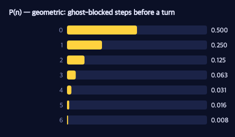
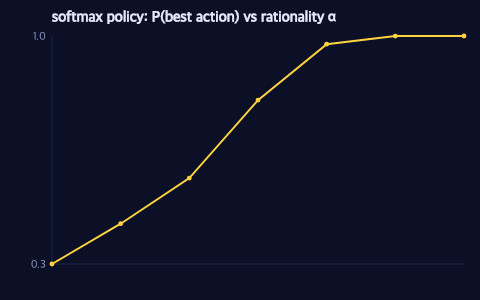
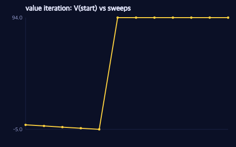
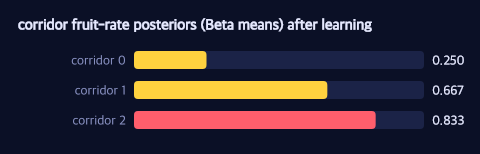
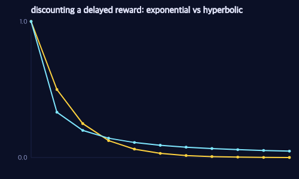

GenMLX Agents
Inferring minds in the maze.
This book ports the curriculum of Modeling Agents with Probabilistic Programs (agentmodels.org) to GenMLX — and tells the whole story inside one environment: a Pac-Man maze.
The thesis runs through every chapter: an agent is a generative function, and
inference is a pluggable, orthogonal axis. A policy is a gen function that
traces an action; planning is running it; inverse planning — asking what an agent
wanted or believed — is inference over that same function. Exact enumeration,
Monte-Carlo, gradients, or an LLM can each play the role of the inference engine
without the model changing a line.
Why Pac-Man? Because almost the entire arc — Markov decision processes, gridworlds, partial observability, reinforcement learning, inverse reward inference, cognitive biases, and multi-agent games — is sequential decision-making on a grid under a utility function, and that is exactly Pac-Man. Pellets are rewards; the power pellet is a large, delayed payoff; a ghost you cannot see through a wall is hidden state. One maze gives the book a single visual language, and every figure in it is a live capture of real GenMLX inference, not a hand-drawn diagram.
Honest scope. This is Pac-Man-primary, not Pac-Man-only. A ghost is modeled as POMDP latent state — a belief over where it is — never as part of the planner’s state vector, so planning stays tractable. The probabilistic- programming primer and the signaling material stay deliberately plain; the adversarial multi-ghost game drops to classical tree search and is labeled as such. Where the maze illuminates, we use it; where it would obscure, we don’t.
How to read this book
Every chapter shows runnable GenMLX code, lifted verbatim from a file under
examples/agentmodels/, and every figure is regenerated from an actual rollout or
posterior. The substrate is one namespace — genmlx.agents.pacman — a thin layer
over the genmlx.agents library. Start with the legend, which fixes
the maze’s visual vocabulary once.
Running the code
bun run --bun nbb examples/agentmodels/<chapter>.cljs
The Pac-Man Maze: A Legend
Every chapter draws on one environment, compiled from ASCII art by
genmlx.agents.pacman. The vocabulary is fixed here so no chapter has to redefine
it.
| Glyph | Cell | Role | Reward | Meaning |
|---|---|---|---|---|
% / # | :wall | wall | — | impassable |
| (space) | :empty | floor | — | open corridor |
. | :pellet | pellet | +10 | small reward, terminal cache |
o | :power | power pellet | +50 | large reward, terminal cache |
F | :fruit | fruit | +100 | highest reward, terminal cache |
P | :empty | Pac-Man start | — | compiles to floor; start position |
G | :empty | ghost seed | — | POMDP latent, never planner state |
Every step costs −1 (the :timeCost), so a rational Pac-Man trades reward
against distance.
Coordinates and actions
A maze is a vector of rows, top row first. For a cell at column x, row y, the
dense state index is s = x + W·y. Actions are :left (−x), :right (+x), :up
(−y, toward the top), and :down (+y).
The load-bearing decision
Pellets, power pellets, and fruit are terminal-utility caches — the agentmodels
“restaurant” pattern — not a consumed food set carried in the state. Ghosts are
POMDP latent state — a belief over which cell they occupy — not added to the
planner’s state vector. Both choices keep the planner’s state the single dense
index s = x + W·y, so dense value iteration never faces the food-set / ghost-count
explosion that classic Pac-Man has. This is what lets the whole genmlx.agents
library apply to a Pac-Man maze unchanged.
The canonical mazes
classic-maze— a 9×7 ring with four caches at the corners and Pac-Man at the centre; all four are equidistant, so an optimal Pac-Man’s choice is pure value.corridor— a 1-D hallway to a single power pellet (the minimal teaching MDP).two-caches— a vertical corridor with a pellet north and a power pellet south (the inverse-planning setup: the first step reveals the preference).haunted-maze— a hidden-state maze whose true rewarding cache is revealed only at a signpost floor cell (the POMDP chapter).
The maze, rendered
Every figure in this book is a live capture of real GenMLX inference, produced by
bin/agents-book-figures. Here is classic-maze itself — the floor shaded by the
agent’s value function V(s) (brighter = higher value), Pac-Man at the centre, and
the four corner caches (pellet, cyan power pellet, red fruit):

And the optimal Pac-Man rolling out from the centre to the highest-value cache — the fruit — one frame per step:

Probabilistic Programming in Five Minutes
Ports agentmodels.org Ch 1 (the taster snippets) and Ch 2 (the WebPPL/PPL primer).
Stand at a junction in the maze. A ghost is bearing down a corridor, and it has a choice to make: turn left, or turn right. You don’t know which. But you can describe the not-knowing — and once you can describe it, you can compute with it. That is the whole promise of probabilistic programming, and we can deliver on it before the ghost even reaches you.
A few primitives carry the entire idea. We’ll meet them one at a time, motivated by ghosts and corridors, then step back and name what they have in common.
A coin for the ghost’s choice
The ghost’s turn is a coin flip. In GenMLX a coin is a one-line generative function:
(def coin
"A one-site probabilistic program: a single fair coin. Its return value IS the
drawn choice, so `Infer`-ing it (here: forward p/simulate) is a distribution
over {0,1}."
(gen [] (trace :c (dist/flip 0.5))))
Two things are doing the work here. dist/flip 0.5 is an elementary random primitive — a fair Bernoulli, returning 0 or 1. And trace :c names that draw: it records the sampled value at the address :c so we can read it back, condition on it, or score it later. A generative function is, at bottom, just ordinary Clojure with named random choices threaded through it.
Running it forward is p/simulate. Each call draws a fresh ghost-turn; we map 1→H (right) and 0→T (left) only at the print boundary, because values stay as MLX arrays inside the model:
(defn coin-taster
"Three forward draws from `coin`, each as T/H. Returns the vector of faces."
[]
(mapv (fn [_]
(-> (p/simulate coin* []) :retval flip->HT))
(range 3)))
p/simulate hands back a Trace — the central object of the whole library. A trace bundles three things you can inspect: :choices (the choicemap of named draws, here {:c 1}), :retval (what the program returned), and :score (the log-probability of those choices). Everything downstream — conditioning, planning, inference — is built from reading and editing traces.
Four directions: categorical
A coin has two faces; a junction has four exits. When Pac-Man must pick among :left :right :up :down, the primitive is categorical over a vector of (log-)weights:
(def erp-model
"A handful of ERPs in one program, returned as a structured map. Forward
p/simulate draws all of them jointly."
(gen []
(let [b (trace :bern (dist/bernoulli 0.5))
c (trace :cat (dist/categorical (mx/array [0.0 0.0 0.0]))) ; uniform over 3
g (trace :norm (dist/gaussian 0.0 1.0))
u (trace :unif (dist/uniform 0.0 1.0))]
{:bern b :cat c :norm g :unif u})))
Equal weights give a uniform choice over the directions (three here, four in a real junction). Note how bernoulli, categorical, gaussian, and uniform all live side by side in one gen body and return a structured map — a generative function can mix discrete and continuous randomness freely, and forward p/simulate draws the whole bundle jointly. That gaussian is exactly what you’d use for a noisy estimate of a ghost’s position; uniform, for jitter in the corridor.
How far before a ghost blocks you?
Now a genuinely recursive question: Pac-Man walks down a corridor, and at each cell a ghost might cut him off. How many cells does he get? At each step, flip a fair coin — heads, he continues; tails, he’s blocked. The count of consecutive continues is a geometric random variable, and agentmodels writes it as a recursion: geometric = function(){ return flip() ? 1 + geometric() : 0 }.
We can write the same recursion as a generative function. Because we want an exact answer (not a sampled estimate), we unroll it to a fixed depth so every flip becomes its own enumeration axis:
(defn geometric-recursive
"Depth-bounded recursive geometric as a gen function. n = number of consecutive
`continue`s (fair flips landing 1) before the first stop; capped at max-depth."
[max-depth]
(gen []
(loop [i 0, reached (mx/scalar 1.0), n (mx/scalar 0.0)]
(if (>= i max-depth)
n
(let [c (trace (keyword (str "c" i)) (dist/flip 0.5))
;; reached stays 1.0 only while every earlier flip continued
continue (mx/multiply reached (mx/astype c mx/float32))]
(recur (inc i) continue (mx/add n continue)))))))
The trick is reached: it stays 1.0 only while every earlier flip continued, so n accumulates the length of the leading run of continues — exactly the geometric count, with no host branching that enumeration couldn’t follow. The closed form is P(n = k) = 0.5^{k+1}, and the mean number of cells is E[n] = 1.

Each bar halves the one before it: half the time the ghost blocks immediately (n=0), a quarter of the time after one cell, and so on. The long thin tail is why the average run is just one cell even though long runs are possible.
For everyday use you’d never unroll by hand — GenMLX ships the primitive, and you can read its pmf straight off the log-probability with p/assess, no enumeration needed:
(def geometric-builtin
"The same distribution as a single primitive trace site."
(gen [] (trace :n (dist/geometric 0.5))))
p/assess is the trace inspector’s mirror image: hand it a model and a fixed choicemap (say {:n k}) and it returns the log-probability the model assigns to those choices. (Math/exp weight) recovers 0.5^{k+1} exactly.
Conditioning: “given Pac-Man survived”
The last primitive is the one that turns description into inference. Suppose three ghosts each flip to decide whether to chase, and we learn that at least two of them did. What does that tell us about the first ghost? In GenMLX, a hard condition is a tiny idiom: trace a Bernoulli whose probability is the event’s 0/1 mask, then observe it equal to 1.
(def first-flip-given-ge2
"Three fair flips; condition (via :ge2) on total heads >= 2; RETURN the first
flip so its marginal is P(first = H | total >= 2)."
(gen []
(let [a (trace :a (dist/flip 0.5))
b (trace :b (dist/flip 0.5))
c (trace :c (dist/flip 0.5))
total (reduce mx/add (mapv #(mx/astype % mx/float32) [a b c]))
mask (mx/where (mx/greater-equal total (mx/scalar 2.0))
(mx/scalar 1.0) (mx/scalar 0.0))]
(trace :ge2 (dist/bernoulli mask))
a)))
Observing bernoulli(mask) = 1 contributes log(mask): zero where the event holds, -∞ where it doesn’t — a hard filter that erases the worlds inconsistent with the evidence. Conditioning this model on :ge2 = 1 and reading the marginal of the first flip gives P(first = H | total ≥ 2) = 0.75. Knowing at least two ghosts chased makes it three-to-one that any particular one did. Reframed for the maze: given Pac-Man reached the pellet, which paths could he have taken? — the surviving trajectories, reweighted by how likely each was to survive.
What just happened
Five primitives — flip, categorical/gaussian/uniform, a recursive sampler, and condition — and one object, the Trace, with its :choices, :retval, and :score. Every model in this book is some arrangement of these. What changes from chapter to chapter is not the primitives but the question we ask of the trace: forward-simulate it, score it, or condition on evidence and infer backward.
Next we make the maze itself the model: a generative function whose random choices are an agent’s actions, and whose conditioning is the assumption that the agent is rational.
Agents as Probabilistic Programs: One-Shot Choice at a Junction
Ports agentmodels.org Ch 3 (agents as programs).
Pac-Man rolls to a stop at a 4-way junction. Four corridors leave the cell: a power pellet glows down the left arm, fruit waits to the right, ordinary pellets sit top and bottom. He has one decision to make — which way? Before we write a planner that searches, this chapter makes a smaller, sharper claim: the act of choosing is itself a tiny probabilistic program. An agent is a generative function whose single random choice is its action, and the distribution over that choice is the agent’s rationality. Change one number and the same program slides from a perfect optimizer to a distractible human.
A junction, scored
Suppose someone has already handed us the value of standing at each neighbouring cell — the expected utility EU of each of the four moves. (The next chapter earns those numbers with value iteration; here we take them as given, the way agentmodels’ first agent does.) The floor below is shaded by that value function V(s): brighter arms lead to richer caches.
Reading the figure, the two horizontal arms glow most — the fruit (+100) and the power pellet (+50) dominate the two pellet arms (+10 each). A rational Pac-Man should lean right. The question is how strongly.
The policy is one traced choice
In GenMLX an agent’s policy is a generative function with exactly one random site: :action. The distribution at that site is a Boltzmann (soft-max) policy — it turns a vector of expected utilities into a distribution over actions. The whole construction lives in one helper:
(defn softmax-action
"Boltzmann action policy: returns a Categorical distribution over actions
with logits `alpha * eu`, i.e. action ~ Categorical(softmax(alpha * eu)).
`eu` is a vector/array of expected utilities, one per action. `alpha` is the
(inverse-temperature) rationality parameter. With alpha = ##Inf the policy is
the deterministic argmax, delegated to exact/categorical-argmax so ties break
uniformly. This is the primary GenMLX realization of factor(alpha * EU)."
[alpha eu]
(if (= alpha ##Inf)
(exact/categorical-argmax eu)
(dist/categorical (mx/multiply (mx/scalar alpha) eu))))
dist/categorical treats its argument as logits and normalizes through a log-softmax, so feeding it alpha * eu yields exactly Categorical(softmax(alpha · EU)). That is the GenMLX translation of the move agentmodels makes when it writes factor(alpha * EU(action)) inside an enumerated action choice: scoring an action by alpha · EU and renormalizing is identical to drawing it from a softmax over alpha · EU. Same maths, expressed as a distribution instead of a side condition.
With the helper in hand the policy itself is a three-line generative function — the core contract of the whole book:
;; usage — the agent IS a generative function
(def policy
(gen [eu]
(trace :action (softmax-action alpha eu))))
(p/simulate policy [eu]) ;; => a Trace whose :action site holds the chosen move
p/simulate runs the body, samples the action, and records it as a trace. Every GFI operation now applies for free: assess scores an observed move under the policy, generate conditions on a chosen direction, propose draws one with its weight. The agent is not a special object with a .act method — it is a program, and the eleven-protocol machinery from the tutorial treats it like any other.
Alpha is the rationality knob
The single parameter alpha (an inverse temperature) controls how rational the agent is, and it interpolates a whole family of agents:
alpha = 0— every logit collapses to0, the softmax is uniform, and Pac-Man picks a corridor by coin-flip. A drunk ghost-dodger; utility ignored.- moderate
alpha— a noisy but sensible chooser. He usually heads for the fruit, sometimes wanders toward the power pellet, rarely toward a lone pellet. This is thesoftMaxAgent: a plausible model of a human player who mostly does the smart thing. alpha = ##Inf— the limit concentrates all mass onargmax(EU).softmax-actionmakes this exact rather than merely near-exact by short-circuiting toexact/categorical-argmax, which also breaks ties uniformly so two equally-good arms split 50/50 instead of relying on float noise. This is the optimal one-stepmaxAgent.
The probability the agent takes the single best action climbs from chance toward certainty as alpha grows:

At alpha = 0 the curve sits at 0.25: one of four corridors, chosen blind. As alpha rises the best arm’s share sweeps up toward 1.0. The shape of that climb is the agent’s temperament, and it is one scalar in the program — no separate “rational” and “irrational” code paths, just a knob.
Why this is planning-as-inference
The deepest point is hiding in dist/categorical. Because the policy is an honest distribution, choosing an action and inferring an action are the same operation viewed from two sides. The forward read is a noisy controller: sample :action, watch Pac-Man move. The inverse read is planning-as-inference: imagine we observe an outcome — “Pac-Man reached the fruit” — and condition the program on it. Conditioning reshapes the prior over :action into a posterior; the moves consistent with eating the fruit gain weight, the rest lose it, and the posterior over :action is the plan.
The mechanism that makes soft observations like this composable is factor-dist, a pseudo-distribution whose log-probability is a free scalar:
(defdist factor-dist
"Soft-conditioning pseudo-distribution. Deterministically draws 0 and
contributes log-weight w to the trace :score for *any* drawn value, so
(trace :soft (factor-dist (mx/scalar 2.3))) ; score += 2.3
realizes agentmodels' factor(2.3). Mirrors dist/delta but injects an
arbitrary scalar log-factor rather than a 0/-inf point-mass indicator."
[w]
(sample [_key] (mx/scalar 0.0))
(log-prob [_value] w)
(support [] [(mx/scalar 0.0)]))
Every handler transition accumulates score += dist-log-prob(value), so a distribution whose log-prob is a constant w injects exactly w into the trace score regardless of what is drawn — which is precisely WebPPL’s factor(w), a soft observation that reweights a trace without binding a variable. softmax-action is just factor-dist specialized to alpha · EU and folded into a categorical: the rationality of the policy and the conditioning of inference are the same primitive, which is why one program serves both directions.
So the agent at the junction is already a complete probabilistic story. What it still lacks is where the expected utilities come from — right now we assumed them. Next we compute EU properly by looking more than one step ahead: the Markov decision process and value iteration.
Sequential Decisions: MDPs and the Maze
Ports agentmodels.org Ch 3a (MDPs).
So far Pac-Man has made one choice at a time. But the interesting thing about a maze is that choices are linked: where you step now decides which steps are available next, and the pellet at the end is only worth chasing if the corridor between here and there isn’t too long. To reason about a sequence of decisions we need a model of how the world unfolds — a Markov decision process, or MDP.
The glyphs and the −1 step cost are fixed on the shared legend; this chapter is about what to do with them.
The minimal maze: a corridor
Strip the maze down to a single row and put one power pellet at the far right. That is the corridor — agentmodels’ integer line-world, the smallest MDP you can fully trace by hand. Pac-Man starts at the left; every step costs −1; reaching the pellet ends the episode with its reward. The only question is whether the pellet is worth walking to.
line-mdp builds exactly this world as plain data, then compiles it through the gridworld builder:
(defn line-mdp
"Build the Ch 3a integer line-world: an n-state 1-D corridor with a single
:goal reward and a per-step timeCost (so the agent reaches the goal quickly).
Movement is left/right; up/down clamp to a stay since the grid is one row high.
Options: :n (default 7) :goal-idx (default n-1) :reward (default 1.0)
:time-cost (default -0.1) :start (default [0 0]) :gamma (default 1.0)."
[{:keys [n goal-idx reward time-cost start gamma]
:or {n 7 reward 1.0 time-cost -0.1 gamma 1.0}}]
(let [goal-idx (or goal-idx (dec n))]
(gw/build-mdp {:grid (line-grid n goal-idx)
:utilities {:goal reward :timeCost time-cost}
:start (or start [0 0]) :gamma gamma :noise 0.0})))
Five things define the MDP, and they are all right here: the states (the n cells of the grid), the actions (left/right, with up/down clamping to a stay), the transition function (:noise 0.0, so a move lands deterministically one cell over), the per-step time cost (:timeCost, the pressure to finish), and the terminal reward (:goal, the cell that ends the episode and pays out). build-mdp turns these into the dense tensors T (transition), R (reward), and term (terminal mask) that the planner consumes.
Here is the corridor in motion — Pac-Man walking rightward, one frame per step, to the power pellet that closes the episode:

The walk looks obvious, but why Pac-Man heads right rather than left is a value computation — and that is the heart of the chapter.
Value: the same answer, computed two ways
The value V(s) of a state is the total future reward Pac-Man expects from there, acting by his own policy. agentmodels defines this with two mutually recursive functions: expectedUtility(s, a) — the value of taking action a in state s — and the policy, a softmax over those expected utilities. Softmax (controlled by a rationality parameter alpha) means the agent strongly prefers high-value actions but isn’t a perfect maximizer; in the alpha = ##Inf limit it becomes the hard max.
GenMLX computes this value two ways that agree by construction, and the agreement is the point: it certifies that the fast tensor path means the same thing as the faithful recursive one.
The first path is tensor value iteration — the Bellman backup, run as MLX graph ops on the GPU. Start from V = 0 and sweep:
(defn value-iteration
"Run `n` Bellman sweeps from V = 0. Backup is the soft policy-expectation for
finite alpha and hard max at alpha = ##Inf. Returns {:Q [S,A] :V [S]}.
Materializes V each sweep to break lazy-graph accumulation."
[{:keys [S gamma] :as mdp} alpha n]
(let [value-of (value-fn-for alpha)]
(loop [V (mx/zeros #js [S]), i 0, Q nil]
(if (>= i n)
{:Q Q :V V}
(let [[Q' V'] (bellman-step mdp gamma alpha value-of V)]
(mx/materialize! V')
(recur V' (inc i) Q'))))))
Each sweep computes Q[s,a] = R + gamma·(1−term)·(T·V) and then folds Q back into a new V — the soft policy-expectation V(s) = Σ_a softmax(alpha·Q[s])[a]·Q[s,a]. The mx/materialize! call forces each sweep’s V to a concrete array so the lazy graph doesn’t grow without bound across iterations. After enough sweeps V stops changing: it has converged.
The second path is the faithful recursive expectedUtility — agentmodels’ act/expectedUtility recursion almost line for line, on host scalars, memoized with exact/with-cache (the dp.cache analog):
(defn recursive-eu
"agentmodels' expectedUtility / act, memoized with exact/with-cache (the
dp.cache analog). SOFT-rational and mutually recursive: the future value is
the expectation of EU under the agent's own softmax(alpha*EU) policy. Operates
on host-side scalars (state, action, timeLeft) — with-cache keys on JS args.
EU(s,a,t) = u(s,a) + gamma*[ terminal(s) or t<=1 ? 0
: Σ_s' T(s,a,s') * V(s', t-1) ]
V(s,t) = Σ_a softmax(alpha*EU(s,·,t))[a] * EU(s,a,t)
Returns {:eu (fn [s a t]) :soft-v (fn [s t])}; EU(s,a,horizon) is the t-step Q
that `value-iteration` computes with `n = horizon` sweeps."
[{:keys [A gamma terminals] :as mdp}]
...
(let [Rh (mx/->clj (:R mdp)) ; [S][A] JS numbers
Th (mx/->clj (:T mdp)) ; [S][A][S'] JS numbers
terms (set (keys terminals))
eu-atom (atom nil)
soft-v (fn [s t]
(let [qs (mapv (fn [a] (@eu-atom s a t)) (range A))]
(reduce + (map * (softmax-vec (mapv #(* (:alpha mdp) %) qs)) qs))))
eu (exact/with-cache
(fn [s a t]
(let [u (get-in Rh [s a])]
(if (or (terms s) (<= t 1))
u
(+ u (* gamma
(reduce-kv
(fn [acc s' pr]
(if (pos? pr) (+ acc (* pr (soft-v s' (dec t)))) acc))
0.0 (get-in Th [s a]))))))))]
(reset! eu-atom eu)
{:eu eu :soft-v soft-v}))
Read the EU formula in the docstring as a sentence: the value of doing a in s is the immediate reward u(s,a), plus — unless s is terminal or we’ve run out of time — the discounted average over next states of their value one step shorter. The V formula closes the loop by mixing the EUs under the agent’s own softmax policy. That mutual recursion is exponential if computed naively: each state expands into all its successors, which expand again. exact/with-cache is what tames it — every (s, a, t) triple is computed once and remembered, turning the exponential tree into a polynomial table. This is the chapter’s load-bearing lesson, and the reason memoization isn’t an optimization detail but a correctness-of-scale requirement.
Both paths return the same Q and V (this is certified by the equivalence test). EU(s, a, horizon) from the recursive path equals Q[s,a] from n = horizon value-iteration sweeps.
Watching value propagate
Why does value iteration need several sweeps rather than one? Because reward information has to travel backward through the maze. On sweep one, only cells adjacent to the goal learn they’re valuable. On sweep two, their neighbors learn it. The goal’s worth ripples outward one cell per sweep until it reaches the start.
The plot below tracks V(start) — the value Pac-Man assigns to where he’s standing — across successive sweeps:

The flat early region is Pac-Man not yet knowing the pellet is worth walking to — the reward signal simply hasn’t reached the start. The jump is the moment the backup chain connects start to goal; the plateau is convergence. The number of sweeps you need is the distance the reward must travel, which is exactly why the corridor’s horizon (n-iters) is set generously.
Acting it out
make-mdp-agent packages all of this: it runs value iteration to get Q and V, wraps the softmax policy as a generative function, and exposes :act (sample one action) and :expected-utility (the recursive value, computed lazily only if you ask). The policy being a generative function is the unifying idea of the whole book — choosing an action is just (trace :action (softmax-action alpha (Q s))), a GFI random choice like any other.
To produce a full trajectory, simulate-mdp rolls the policy forward from the start until a terminal cell:
(defn simulate-mdp
"Roll the agent's policy out from `start` for at most `horizon` steps, stopping
at a terminal. The action comes from the softmax policy (decision noise) and
the next state is sampled from T (environment / transition noise). Returns
{:states [s0 s1 ...] :actions [a0 a1 ...]} (JS ints); one action per transition."
[{:keys [mdp act] :as agent} start horizon & [{:keys [rollout-mode key]}]]
(if (= rollout-mode :fused)
(rollout/rollout-mdp agent start horizon {:key key})
(let [{:keys [T terminals]} mdp]
(loop [s start, step 0, k key, states [start], actions []]
(if (or (>= step horizon) (contains? terminals s))
{:states states :actions actions}
(let [[k-act k-next k'] (if k (rng/split-n k 3) [nil nil nil])
a (if k-act (act s k-act) (act s))
s' (sample-next T s a k-next)]
(recur s' (inc step) k' (conj states s') (conj actions a))))))))
Two kinds of randomness meet in that loop: the decision noise of the softmax policy (act) and the environment noise of the transition (sample-next draws the next state from T[s,a,:]). For the corridor both are tame — noise 0.0 makes the transition one-hot — so the rollout is the clean rightward walk you saw in the GIF. The whole thing in practice is one builder and one roll:
(let [agent (make-mdp-agent {:mdp (line-mdp {:n 7})})]
(simulate-mdp agent 0 12))
;; => {:states [0 1 2 3 4 5 6] :actions [...]}
That is the corridor solved: a line of states, a backed-up value function, and a policy that walks the gradient to the pellet.
Next we widen the corridor into two dimensions — and discover that with walls and a cliff, the shortest path and the best path stop being the same thing.
Gridworld in Depth: Stochastic Transitions and Q-Values
Ports agentmodels.org Ch 3b (stochastic gridworld).
So far Pac-Man has lived in a hallway. Now drop him into a real maze: a 9×7 ring with four caches at the corners and Pac-Man stranded in the middle. Every cache is exactly five steps away, so distance tells him nothing — the only thing that breaks the tie is value. Which corner is worth the most? And what happens when the maze floor turns slippery, and the action he intends is not always the action he gets?
This chapter answers both questions with one machine: compile the maze into
tensors, run value iteration to get a number V(s) for every cell, and read off
the optimal route. The glyphs and rewards are fixed on the shared legend;
here we care about the numbers underneath them.
The maze, as a tensor
A planner cannot reason about ASCII art. build-mdp turns a grid literal into the
three tensors a Markov Decision Process is made of: a transition tensor T indexed
by [state, action, next-state], a reward tensor R indexed by [state, action],
and a terminal mask. Here is the whole compiler:
(defn build-mdp
[{:keys [grid utilities start gamma noise] :or {utilities {} gamma 1.0 noise 0.0}}]
(let [{:keys [W H S walls terminals]} (parse-grid grid)
A (count action-deltas)
time-cost (get utilities :timeCost 0.0)
ns-fn (fn [s a] (next-state W H walls s a))
;; geometry (host-side, pure CLJS) -> [S,A] table of next-state indices
ns-rows (vec (for [s (range S)] (vec (for [a (range A)] (ns-fn s a)))))
;; transition tensor: deterministic when noise = 0, orthogonal slip otherwise
T (transition-tensor S A ns-rows noise) ; [S,A,S']
util (fn [s] (+ (get utilities (get terminals s) 0.0) time-cost))
R (mx/array (clj->js (vec (for [s (range S)] (vec (repeat A (util s))))))
mx/float32) ; [S,A]
term (mx/array (clj->js (vec (for [s (range S)]
(if (contains? terminals s) 1.0 0.0))))
mx/float32) ; [S]
[sx sy] (or start [0 0])
start-idx (+ sx (* W sy))]
(mx/eval! T R term)
{:W W :H H :S S :A A
:T T :R R :term term
:terminals terminals :walls walls :start-idx start-idx
:ns-fn ns-fn :action-kw action-kw :gamma gamma :noise noise}))
Note the purity split that the docstring insists on. The discrete geometry —
which cell is a wall, where each of the four actions lands — is tiny and obvious, so
it runs in plain host-side ClojureScript (ns-rows). The heavy numeric tensor T
is built once, mx/eval!-ed, and from there everything is MLX. Reward is just
utility(s) + timeCost, broadcast across actions: in our maze every step costs −1,
so a rational Pac-Man pays for distance and the corner he picks had better be worth
the walk.
A slippery floor
When noise = 0, each T row is a one-hot vector: action :right sends Pac-Man
right, full stop. Turn the noise up and the floor becomes slippery. Crucially, this
is not a uniform random action — agentmodels calls it transitionNoiseProbability,
and it only ever slips the intended action to one of its two perpendicular
directions:
;; Orthogonal slip: a horizontal action (left/right) slips to a vertical one
;; (up/down), and vice-versa — agentmodels' transitionNoiseProbability. NOT a
;; uniform random action; the reverse direction is never part of the slip.
(def ^:private perpendicular {0 [2 3] 1 [2 3] 2 [0 1] 3 [0 1]})
(defn transition-tensor
[S A ns-rows noise]
(mx/array
(clj->js
(vec (for [s (range S)]
(vec (for [a (range A)]
(let [[p q] (perpendicular a)
mass (merge-with +
{(get-in ns-rows [s a]) (- 1.0 noise)}
{(get-in ns-rows [s p]) (* 0.5 noise)}
{(get-in ns-rows [s q]) (* 0.5 noise)})]
(mapv #(get mass % 0.0) (range S))))))))
mx/float32))
The intended next-state keeps mass 1 − noise; the two perpendiculars split the
remaining noise evenly. If a slip would push Pac-Man into a wall, ns-rows
already encodes “stay put”, so that mass falls back onto his current cell — no
probability leaks, every row sums to 1 by construction. The behavioural upshot:
under a slippery floor Pac-Man can no longer trust a corridor that runs alongside a
hazard, because an orthogonal slip might shove him sideways into it. He will value
cliff-adjacent cells less and detour around them — exactly the risk-aversion that
emerges, for free, from the transition model.
Solving for value: the Bellman backup
Given T, R, and the terminal mask, the value of a state is the discounted
reward Pac-Man can expect if he acts well from here on. Value iteration computes it
by sweeping the Bellman backup until it settles. Each sweep is one matrix-vector
product on the GPU:
(defn bellman-step
"One synchronous Bellman backup (pure MLX graph). V:[S] -> [Q:[S,A], V':[S]].
next-V[s,a] = Σ_s' T[s,a,s'] * V[s'] via a flat matrix-vector product."
[{:keys [S A T R term]} gamma alpha value-of V]
(let [V-col (mx/reshape V #js [S 1])
T-flat (mx/reshape T #js [(* S A) S])
next-V (mx/reshape (mx/matmul T-flat V-col) #js [S A]) ; [S,A]
cont (mx/reshape (mx/subtract (mx/scalar 1.0) term) #js [S 1]) ; [S,1] -> bcast over A
Q (mx/add R (mx/multiply (mx/scalar gamma)
(mx/multiply cont next-V)))]
[Q (value-of alpha Q)]))
Read it as the definition of a Q-value. Q[s, a] is the worth of taking action
a in state s: the immediate reward R[s, a] plus the discounted value of where
you land, Σ_s' T[s,a,s'] * V[s']. The cont factor zeroes the future at terminal
cells — once Pac-Man eats the fruit, the episode is over and there is no
continuation to add. Running this sweep n times from V = 0 is the whole of
value-iteration, which returns both {:Q [S,A] :V [S]}. The Q tensor is the
per-cell, per-action heatmap; V is the best you can do from each cell, and that is
what gets shaded onto the floor.
The shading is V. The floor glows brightest in the basin around the fruit
(reward +100, bottom-left) and fades toward the modest pellets (+10) at the other
corners. Value is not painted by hand — it diffuses outward from each cache through
the Bellman sweeps, strongest near the richest one. Pac-Man, sitting at the centre
where all four caches are equidistant, sees the brightest gradient pulling toward
the fruit.
Following the gradient
Reading V off the floor, the optimal policy is “climb toward higher value”. The
agent’s first action at any cell is just the highest-Q action there, and rolling
that policy out from the start produces a trajectory:
;; an optimal MDP Pac-Man over the classic maze (alpha = ##Inf is hard argmax)
(def agent (pac/mdp-agent {:maze pac/classic-maze}))
(agent/simulate-mdp agent (:start-idx (:mdp agent)) 30)
;; => {:states [s0 s1 ...] :actions [a0 a1 ...]}
Watch where he goes: not to the nearest corner, but to the most valuable reachable one. With four equidistant caches, distance is a wash and value decides — so the optimal Pac-Man threads left and down to the +100 fruit, leaving the +10 pellets untouched. That is the entire lesson of value iteration in one walk: the agent does not search the maze, it follows a number that already encodes the answer at every cell.
Turn :noise up in pac/mdp-agent and run it again, and the same machinery bends
the route: cells beside a hazard lose value because a slip could be costly, and
Pac-Man trades a short risky line for a longer safe one — risk-aversion as a
consequence of the model, never a rule we wrote down.
So far Pac-Man can see the whole maze. Next we take that away: a ghost waits somewhere he cannot see through the walls. When the state is hidden, planning is no longer about a known cell but about a belief over where the ghost might be — the partially observed maze, and the POMDP that solves it.
Hidden State: POMDPs and Belief Over Ghosts
Ports agentmodels.org Ch 3c (POMDPs).
Every maze so far has been fully visible: Pac-Man knew exactly where the reward was and planned a path to it. But the interesting worlds are the ones he can’t see through. In the haunted maze there are two candidate caches at the top — a pellet and a power pellet — and only one of them actually pays. Which one is hidden state. Pac-Man can’t tell by looking; he learns the truth only by walking onto a single signpost floor cell between the two caches. Until then he is acting under uncertainty.
This is a Partially Observable MDP. The agent no longer knows which world he is in, so he can’t plan against a single MDP. Instead he carries a belief — a distribution over which latent world is the real one — acts on that belief, and updates it by Bayes’ rule whenever an observation arrives. See the legend for the glyph and scoring vocabulary.

The corridor forces the issue. The only path from Pac-Man’s start at the bottom up to the fork runs through the signpost, so he must pass the reveal before he ever has to commit left or right.
The world, as data
The environment is pure geometry plus an observation model. restaurant-gridworld
lays out the two candidate goals, marks the signpost cell, fixes which world is
actually true, and — crucially — defines what Pac-Man can observe from where:
(defn restaurant-gridworld
[{:keys [grid goals signpost true-world start] :or {goals [:A :B] start [0 0]}}]
(let [W (count (first grid))
[sx sy] start]
{:kind :gridworld
:grid grid
:goals goals
:worlds goals ; latent = which goal is rewarding
:true-world true-world
:signpost signpost
:start-idx (+ sx (* W sy))
:prior (zipmap goals (repeat (/ 1.0 (count goals))))
;; deterministic location-gated reveal: standing on the signpost reveals the
;; world identity; everywhere else there is no information (obs = nil).
:observe (fn [world loc] (when (= loc signpost) world))}))
The whole partial-observability story lives in that last line. The :observe
function returns the true world only when Pac-Man’s location is the signpost;
everywhere else it returns nil. A nil observation carries no information —
it is the identity for belief updates. This is what gives the belief its
characteristic flat-then-snap shape: nothing happens for step after step, and
then the truth arrives all at once.
Belief is just a map
There is no special data structure here. A belief is a plain Clojure map from
world to probability, {:A 0.5 :B 0.5} at the start. The filter that updates it
is one Bayes step, lifted verbatim from make-pomdp-agent:
;; one Bayes filtering step: b'(w) ∝ b(w) · P(obs | w, loc).
;; obs = nil (uninformative location) => belief unchanged (flat-then-snap).
update-belief (fn [belief loc obs]
(if (nil? obs)
belief
(let [logm (into {} (map (fn [[w b]]
[w (+ (Math/log b)
(if (= (observe w loc) obs) 0.0 ##-Inf))])
belief))]
(if (every? #(= % ##-Inf) (vals logm))
belief
(inv/normalize-logs logm)))))
Read it as Bayes’ rule in three moves. If the observation is nil, return the
belief untouched — the uninformative case. Otherwise score each world in
log-space: a world that would have produced this observation keeps its log-prior
(+ 0.0); a world that contradicts the observation is annihilated (+ ##-Inf).
Renormalising with inv/normalize-logs turns those scores back into a
distribution. (The final guard is defensive: an observation that is impossible
under every world leaves the belief unchanged rather than dividing by zero.)
The companion test pins exactly this behaviour. Off the signpost the belief does
not move — (ub prior 10 nil) still puts P(:A) = 0.5. Step onto the signpost
and observe :A, and the belief collapses to a point mass: P(:A) = 1.0 and
P(:B) = 0.0 (to 1e-9). Observe :B instead and it snaps the other way,
P(:B) = 1.0. Every filtered belief sums to 1.0 — it stays a proper
distribution throughout.
Before the signpost the two bars are even — Pac-Man genuinely doesn’t know. After the reveal, all the mass is on the world the signpost named. That single snap is the entire epistemic content of the episode.
Acting on a belief: QMDP
Knowing what to believe is half the problem; the agent still has to choose an
action while uncertain. GenMLX builds one fully-solved MDP planner per world,
each carrying its own action-value table Q_w[s,a]. The belief-space value mixes
those tables under the current belief — this is the QMDP approximation:
belief-Q (fn [belief s]
(let [bvec (mx/array (clj->js (mapv #(double (get belief % 0.0)) worlds-vec)) mx/float32)]
(mx/sum (mx/multiply (mx/reshape bvec [W 1]) (mx/idx Qstack s 1)) [0])))
The per-world Q tables are stacked once into a [W,S,A] tensor; at state s
the belief vector [W] is contracted against the [W,A] slice in a single fused
MLX reduction. The result is Q_QMDP(b,s) = Σ_w b(w)·Q_w[s] — each world’s
opinion about the best action, weighted by how strongly Pac-Man believes he is in
that world. The agent then picks an action by softmax over this mixed row, scored
through the GFI exactly like any other policy.
Two properties make this honest. First, the mixture is a genuine convex
combination: the test confirms belief-Q at {:A 0.5 :B 0.5} equals
0.5·Q_A + 0.5·Q_B elementwise (to 1e-4). Second, it collapses to the
underlying MDP at certainty — a point-mass belief {:A 1.0 :B 0.0} gives a
belief-Q identical to Q_A (to 1e-6), and the POMDP agent’s chosen action under
that certain belief is exactly the bare MDP agent’s action. Uncertainty is the
only thing QMDP adds; remove it and you are back to an ordinary planner.
The rollout: flat, then a snap, then the right fork
Putting it together, simulate-pomdp threads state, belief, action, and
observation through the maze. With the optimal regime (alpha = ##Inf, noise 0)
the rollout is deterministic, so we can watch the belief evolve step by step:
(doseq [[tw goal-idx] [[:A 0] [:B 2]]]
(let [[e pa] (build tw ##Inf) ; alpha=Inf + noise 0 => deterministic rollout
roll (pomdp/simulate-pomdp pa e (:start-idx e) 12)
{:keys [states beliefs]} roll]
...))
When the true world is :A, Pac-Man’s belief is flat at the start — P(:A) = 0.5
— and still flat one step later, because he hasn’t reached the signpost yet.
On the step he lands on it, the belief snaps to 1.0. From there QMDP routes
him to the correct cache, and he reaches goal index 0 (the :A cell). Run it
with the truth set to :B and the mirror happens: the belief snaps to :B and he
ends at index 2. The belief is monotone toward the truth — it never moves
away from the world that turns out to be real, it only waits and then commits.
This is the resource-rational picture in miniature: Pac-Man spends no effort guessing while the signpost is out of reach, gathers the one observation the geometry offers, and acts decisively once it lands.
Next we let the hidden state be richer than a single bit — each corridor independently open or closed, revealed only when Pac-Man is adjacent — and watch him replan a detour the moment he learns his preferred route is blocked.
Learning the Maze: Bandits, Thompson Sampling, and PSRL
Ports agentmodels.org Ch 3d (reinforcement learning), plus the bandit arm of 3c.
Every chapter so far has handed Pac-Man a maze whose rewards he already knows — the pellet is worth +10, the fruit +100, and value iteration grinds out the rest (see the legend for the full scoring table). But what if the rewards are unknown? Then Pac-Man cannot plan; he must first learn. This chapter is about the gap between not-knowing and knowing, and the two algorithms that close it: Thompson sampling for the simplest case, and Posterior Sampling RL (PSRL) for the full gridworld.
A bandit is not a maze (a deliberate re-narration)
agentmodels re-stories its multi-armed bandit as a row of restaurants, each with an unknown chance of being good. We do the same trick, but in Pac-Man’s vocabulary: imagine k corridors, each of which is a Bernoulli fruit-spawner. Walk down corridor i and with some hidden probability θ_i a fruit appears; otherwise the corridor is empty. The catch is that θ_i is unknown, and the only way to learn it is to go look — which costs a turn you could have spent on a corridor you already trust.
This framing is authored fiction. A bandit has no geometry: there is no shortest path, no value function over cells, no spatial layout at all. Re-narrating corridors as spawners is faithful to exactly how agentmodels re-stories restaurants and slot machines — it borrows Pac-Man’s imagery to make an abstract decision problem concrete, while keeping the math honestly non-spatial.
The belief over each corridor is a Beta(α, β) distribution — the conjugate prior for a Bernoulli rate. A success bumps α, a failure bumps β, and that single increment is the entire posterior update:
(defn update-arm
"Conjugate Beta-Bernoulli posterior update on arm `i`: a success (reward 1)
bumps alpha, a failure bumps beta; every other arm is untouched (independence)."
[belief i reward]
(update-in belief [:arms i]
(fn [[a b]] (if (== reward 1) [(inc a) b] [a (inc b)]))))
No gradient, no sampling, no inference loop — Beta-Bernoulli conjugacy collapses Bayesian learning into a (inc a). The belief is just {:arms [[a b] ...]}, one Beta per corridor, and the corridors are independent, so visiting one tells you nothing about the others.
Thompson sampling: pick by sampling, not by mean
The naive thing is to always pull the corridor with the highest posterior mean. That over-exploits: a corridor that looked bad on its first pull gets written off forever. Thompson sampling fixes this elegantly — instead of comparing means, sample one θ from each posterior and pull the argmax:
:act (fn [{:keys [arms]} key]
(case strategy
:thompson
;; posterior sampling: draw theta_i ~ Beta(alpha_i,beta_i) per arm and
;; pull the argmax.
(let [av (mx/array (clj->js (mapv first arms)) mx/float32) ; [K] alpha
bv (mx/array (clj->js (mapv second arms)) mx/float32) ; [K] beta
theta (dist/beta-sample-vec av bv key)] ; [K] posterior draw
(int (mx/item (mx/argmax theta))))
...))
The whole strategy is one line of consequence: theta (dist/beta-sample-vec av bv key) draws all K corridors’ rates in a single MLX op, and mx/argmax picks the winner of that draw. The explore-vs-exploit balance is emergent, not hand-tuned. When a corridor’s Beta is wide (few visits), its sampled θ swings high often enough to get re-tried; once the Beta sharpens, the draws barely move and the agent settles. As the docstring puts it, this is posterior sampling, not the optimal information-valuing policy — but it is strikingly close and almost free.
make-bandit-agent hands back exactly the GFI-shaped pieces the rollout needs: an :act function, an :update-belief (which is update-arm above), and an :arm-values reporter that returns each corridor’s posterior mean α/(α+β). After a run of pulls, those means tell you what Pac-Man learned:

The figure shows the posterior means once the dust settles. Corridor 2 — the real fruit-spawner — concentrates near 0.83, while a dry corridor sits down near 0.25. Thompson sampling has discovered the productive corridor without an explicit explore schedule: it simply sampled, acted, and updated until the Betas told it where the fruit lived.
PSRL: lifting posterior sampling back into a maze
Thompson sampling works because a bandit’s “plan” is trivial — just pull an arm. A real maze is harder: even if you knew the reward map, finding the best route takes planning. Posterior Sampling RL is the beautiful generalization. Each episode:
- Sample a hypothesized reward map from the posterior (the maze’s Thompson draw),
- Plan optimally for that hypothesis by value iteration,
- Act greedily on the plan, then
- Update the posterior from what was actually found.
Here the unknown is which free cell is rewarding. The posterior is a categorical over candidate cells, and because the reward signal is deterministic (a cell either pays out or it does not), the Bayes update is exact — observe a reward and the posterior collapses; observe nothing at a cell and that cell is ruled out:
(defn update-posterior
"Exact Bayes update on observing reward `r` at cell `c`: hypotheses inconsistent
with the observation are dropped (h=c requires r=1; h≠c requires r=0) and the rest
renormalized. Observing the reward (r=1 at c) collapses the posterior to c."
[post c r]
(let [keep (into {} (filter (fn [[h _]] (= (if (= h c) 1.0 0.0) (double r))) post))
z (reduce + (vals keep))]
(if (pos? z) (update-vals keep #(/ % z)) post)))
The Thompson draw over the maze is just as simple — walk the cumulative posterior with a uniform sample:
(defn sample-goal
"Thompson sample: draw a goal cell from the posterior with seed `s`."
[post s]
(let [cells (vec (keys post)), u (unit s)]
(loop [i 0, acc 0.0]
(let [acc' (+ acc (post (nth cells i)))]
(if (or (>= i (dec (count cells))) (< u acc')) (nth cells i) (recur (inc i) acc'))))))
The episode loop in psrl then samples a goal, builds a one-cell reward map for it (combined-reward), plans by reusing the same agent/value-iteration from the planning chapters, rolls out greedily, and folds every visited cell into the posterior. Crucially, the planner is unchanged — PSRL is not a new engine, it is the existing MDP planner wrapped in a sample-plan-act-update shell. That is the chapter’s whole thesis in miniature: the agent is a generative function, and learning is an orthogonal axis bolted on without touching the planner.
What the agent actually learns
The companion test pins this down on agentmodels’ 4×4 RL grid. Pac-Man starts at the top-left corner; the true reward sits in the bottom-right free cell, 6 steps away across a 9-step horizon. The optimal agent reaches it in 6 and dwells (using the stay action) for the remaining 3, collecting reward on 3 of 9 steps — so the best achievable return is V*(start) = 3.0.
The posterior arithmetic is exact. Before any data, the prior is uniform over the 12 free cells — each cell gets ≈ 1/12. Observing reward 0 at a cell removes it and renormalizes the survivors; observing reward 1 at the true goal collapses the posterior to it with all mass on that single cell (P > 0.999).
Run the full loop and the learning is decisive. Over five seeds, the posterior concentrates on the true goal with P ≥ 0.99 every time, the final episode achieves exactly zero regret — it has converged to the optimal route — and PSRL beats a no-learning baseline (which keeps sampling from the fixed prior and never updates) on cumulative regret in every seed, staying well under the linear n·V\* = 30 worst case.
Best of all, the regret plateaus. Splitting a 12-episode run in half, the test confirms that regret accrued in the second half is exactly 0.0 — once the posterior collapses, Pac-Man stops paying the exploration tax entirely. That is the signature of posterior sampling: regret is front-loaded into early episodes while the belief is uncertain, then vanishes the moment the maze is learned.
A bandit taught Pac-Man to learn a rate; PSRL taught him to learn a maze. Next we let the maze hide more than rewards — and watch belief itself become the state.
Reasoning About Agents: Inverse Reinforcement Learning
Ports agentmodels.org Ch 4, Reasoning about agents.
Every chapter so far has run the agent forward: give Pac-Man a utility table, plan, watch him walk. This chapter runs the arrow backwards. We sit in the gallery, watch a single step, and ask the inverse question — what does he want? The glyphs and the −1-per-step time cost are on the legend; here the only thing we add is an observer.
The maze: two caches, one corridor
The setup is the two-caches maze from the legend — a vertical corridor with a
small pellet to the north and a fat power pellet to the south. Pac-Man
starts in the middle. We have not been told which cache he prefers; we only get
to watch him move. He takes one step south.
The floor is shaded by the value function. Notice that the brighter half is the
southern one — but that shading is our reconstruction, not something Pac-Man
announced. All we actually observed is a single [state, action] pair: he was
in the centre, he stepped down. Everything else has to be inferred.
The likelihood is already written
The crucial move is that we do not write a new likelihood function for the
observer. The probability of an observed action under a hypothesised goal is
exactly the score of that action under the goal’s own softmax policy — which
is the GFI’s p/assess. The forward policy that the agent acts with is the
same object the observer scores with.
(defn action-loglik
"log P(action = a | state = s) under `agent`'s policy — the GFI assess weight.
assess fully constrains :action, so no sampling happens; the auto-key is just
to satisfy the handler and does not affect the (deterministic) score."
[agent s a]
(mx/item (:weight (p/assess (dyn/auto-key (:policy agent)) [s] (cm/choicemap :action a)))))
Read that carefully. p/assess takes a generative function, its arguments
[s], and a choicemap that pins :action to the observed a. Because the
action is fully constrained, no sampling happens — assess just returns the
log-probability the policy assigns to that choice. That returned :weight is
the per-step likelihood. There is no bespoke inverse-RL code: the likelihood is
a corollary of the agent being a generative function.
Soft rationality is what makes this work. The policy is a Boltzmann softmax with
finite temperature alpha, not a hard argmax. If Pac-Man planned by argmax, any
sub-optimal observed step would have probability zero and instantly collapse the
posterior. With a finite alpha, every action has positive probability — so
evidence accumulates smoothly instead of vetoing hypotheses.
One agent per hypothesis
To turn the likelihood into a posterior, we instantiate one forward agent for
each candidate preference. The agent that values a given cache gives it high
utility and every rival cache low; the grid, noise, and softmax alpha are
shared.
(defn goal-agents
[{:keys [grid goals high low time-cost alpha noise gamma fixed start n-iters]
:or {high 5.0 low 0.0 time-cost -0.1 alpha 2.0 noise 0.0 gamma 1.0 fixed {} start [0 0]
n-iters 40}}]
(reduce
(fn [m g]
(let [utils (merge (assoc (zipmap goals (repeat low)) g high :timeCost time-cost) fixed)
mdp (gw/build-mdp {:grid grid :utilities utils :start start
:gamma gamma :noise noise})]
(assoc m g (agent/make-mdp-agent {:mdp mdp :alpha alpha :gamma gamma :n-iters n-iters}))))
{} goals))
Each hypothesis is a complete MDP agent carrying its own :policy and value
table :Q. Inference is then Bayes’ rule over this finite set: prior times the
product of per-step likelihoods, normalised. posterior-sequence does this
incrementally, returning one posterior map per prefix length so the belief can be
revealed one observed step at a time — index 0 is the prior, index k the
posterior after k actions.
The posterior after one southward step
Conditioning the two-caches hypotheses on Pac-Man’s single step south gives this:

A southward step is roughly three-to-one evidence for the power pellet: P(power) = 0.748 against P(pellet) = 0.252. One step has moved a uniform prior decisively, but not to certainty — under soft rationality a power-pellet-lover usually heads south, and a pellet-lover occasionally does too, so the posterior keeps mass on both.
When one step is not enough
The companion tests run the richer Restaurant-Choice geometry, where three
caches replace two and we also infer the time cost and alpha. They make the
identifiability story precise. After one leftward step toward the near (Donut)
cache, the posterior favourite shifts to Donut — but the two far caches stay
tied:
Veg vs Noodle is unidentifiable, with
|P(vegFav) − P(noodleFav)| < 0.05.
The single step distinguishes near from far, but gives no evidence to separate
two caches that lie symmetrically beyond it. Their paths have not yet diverged.
This is exactly why an observer wants multiple trajectories — and why an
active learner would steer Pac-Man toward a junction that splits the
hypotheses. Feed the longer four-step trajectory all the way to the Donut cache
and the tests confirm the posterior sharpens: P(donutFav) rises over the
single-step value while P(noodleFav) — the far cache — is suppressed.
Preference and noise, jointly
Because alpha is itself a hypothesis dimension, the same enumeration recovers
preference and rationality together. The factorised softmax posterior is built
by scoring each observation against every candidate (utility, timeCost, alpha)
tuple, accumulating action-loglik:
(defn joint-posterior
"Exact P(U,timeCost,alpha | observations). observations = seq of [state action].
Weight = Σ_i action-loglik (the factorized softmax likelihood); uniform prior
cancels in normalize-logs. Returns {tuple -> probability}."
[agents observations]
(inv/normalize-logs
(into {} (for [[tup {:keys [agent]}] agents]
[tup (reduce (fn [acc [s a]] (+ acc (inv/action-loglik agent s a))) 0.0 observations)]))))
The tests pin down why joint inference matters. On the same single leftward
step, a low-noise agent and a high-noise agent disagree about how much to read
into it. With alpha = 0.1, the step is nearly uninformative — P(donutFav)
stays within 0.03 of the prior, because a noisy agent might step left for no
reason at all. With alpha = 100, the very same step is sharply diagnostic,
pushing P(donutFav) well above the low-alpha value. A behaviour only counts
as evidence to the extent the agent is believed to be acting deliberately — and
the model infers that deliberateness from the same data.
There is a tempting shortcut — generate-and-compare: at high alpha just predict
each table’s argmax path and keep the ones that match the observation. The tests
include it and show why it is the worse tool: because Donut South is the
nearest cache, far too many tables (even the all-equal one) route through it, so
at least 10 of the 27 candidates survive. The factorised softmax likelihood,
which weighs how likely each step was rather than merely whether it could
happen, is the discriminating one.
The agent was a generative function; that is the whole trick. Forward, it plans
and acts. Backward, the very same policy is the likelihood, and inference is
just Bayes’ rule bolted onto p/assess — no new machinery, only the arrow
reversed. Next we let the world itself hide things from Pac-Man, and infer his
beliefs alongside his preferences.
Cognitive Biases and Bounded Rationality
Ports agentmodels.org Ch 5 (biases intro).
So far Pac-Man has been a good optimiser — sometimes a perfect one, sometimes a noisy one, but always optimal in expectation. When we let him be stochastic, we did it with softmax: he picks better actions more often, worse actions less often, and the temperature α tunes how sharply. That single knob carried us a long way. This chapter is about where it runs out.
The glyphs, rewards, and the −1 step cost are all on the shared legend; we lean on them here without redefining them.
The baseline a bias departs from
Here is the agent we have been studying — the rational planner, rolled out from the centre of the maze straight to the highest-value cache.
Watch what he doesn’t do. He passes within a step of a small pellet on the way and never turns aside for it; he commits to the long walk to the fruit because the fruit, net of the steps it costs, is worth more. This is the behaviour every earlier chapter recovered, and it is the reference frame for everything below: a bias is a systematic, reproducible departure from this path.
Two kinds of departure
Now suppose we watch a human play, and they do turn aside for the near pellet — every single time, in every maze where a tempting reward sits close to the start. How should our model account for it?
The softmax agent already deviates from optimal. But it deviates randomly. Crank α down and Pac-Man wobbles: sometimes he grabs the near pellet, sometimes the far fruit, sometimes he wanders into a wall. Over many rollouts the errors average out and centre on the optimal path. That is the signature of softmax noise — unbiased scatter around the right answer.
A real player’s diversion is different. It is not scatter; it is a lean. The near pellet wins not occasionally but consistently, and the size of the pull tracks how close the temptation is, not how warm the temperature is. No setting of α reproduces this, because α only controls the width of the deviation, never its direction. A symmetric noise model cannot manufacture an asymmetric, repeatable detour. To capture systematic deviation you have to change the agent’s expected-utility computation itself, not the noise wrapped around it.
That is exactly what the biased planners do. The whole family is built by adding one subjective axis — a delay — to the value recursion, and then a few pure knobs over it. The cleanest way to see the principle is the discount factor:
(defn delta
"Hyperbolic discount factor at subjective delay `d`: 1/(1 + k·d).
δ(k,0)=1; strictly decreasing in d for k>0; k=0 ⇒ δ≡1 (no discounting)."
[k d]
(/ 1.0 (+ 1.0 (* (double k) (double d)))))
delta is the entire mechanism of one bias in three lines. With k = 0 it returns 1.0 for every delay d, so future reward counts exactly as much as present reward — that is the rational agent, and at that limit the biased recursion reproduces the unbiased one exactly. Crank k above zero and delta falls off hyperbolically with delay: the agent values a reward one step away at 1/(1+k), two steps away at 1/(1+2k), and so on. The fruit, being far, gets discounted hard; the near pellet, being close, barely at all. The temptation now outscores the fruit in the agent’s own arithmetic — and it does so every time, in the same direction. That is systematic deviation, produced inside the value computation rather than bolted on as noise.
A second bias enriches the model with myopia — a cap on how far ahead the agent looks at all. The biased agent constructor exposes both as plain options:
(defn make-biased-mdp-agent
"Build a biased MDP agent over `mdp` with a `bias` map
{:discount k :bias :naive|:sophisticated :reward-myopic-bound C_g}.
...
`:act` re-plans from delay 0 each
call (agentmodels' `delay || 0`), which is what produces the Naive plan↔do
divergence. `simulate-biased-mdp` (= agent/simulate-mdp) rolls it out."
[{:keys [mdp alpha gamma n-iters] :or {alpha ##Inf gamma 1.0 n-iters 24}}
{:keys [discount bias reward-myopic-bound]
:or {discount 0.0 bias :sophisticated reward-myopic-bound ##Inf} :as biasm}]
...)
The bias map is the whole vocabulary of bounded rationality this book uses: :discount k is time inconsistency (the hyperbolic pull of delta), :reward-myopic-bound C_g is myopia (look no further than C_g steps), and :bias :naive vs :sophisticated decides whether the agent knows it is time-inconsistent. Note the defaults — discount 0.0, reward-myopic-bound ##Inf — are precisely the un-biased agent. A biased Pac-Man is the rational one with one or two knobs nudged off their neutral settings, which is what makes “bias as a systematic departure from the baseline” a literal statement about the code.
Why this matters two ways
There are two reasons to care, and they are mirror images of each other.
The first is solving problems: if you want an agent that acts well in a maze, you want it unbiased — you turn the knobs to their neutral defaults and let it plan optimally. Bias is a defect to be engineered away.
The second is learning preferences: if you want to infer what a real player wants from watching them play, you must model the bias, because a player who skips the fruit is not telling you the fruit is worthless — they are telling you they discount it. An inverse planner that assumes the player is unbiased will misread that detour as “prefers the near pellet” and recover the wrong utilities. Only an agent model rich enough to contain the bias can subtract it back out and reveal the true preference underneath. Bias here is not a defect; it is the thing the data is shaped by, and modelling it is the price of reading the data honestly.
The same generative function serves both: turn the knobs off to act, turn them on (and infer their settings) to understand. That duality — decision models as tools for doing and as models for interpreting — is the spine of the chapters that follow.
Next we make the first of these biases concrete, and watch a Naive Pac-Man’s plan diverge from what he actually does.
Time Inconsistency I: Hyperbolic Discounting
Ports agentmodels.org Ch 5a (time inconsistency).
Every agent so far has been rational in a specific sense: it had one stable ranking of futures and it followed it. This chapter breaks that. We give Pac-Man a human flaw — he weighs a reward less the longer he must wait for it, but not by a clean exponential. He uses a hyperbolic curve, and that single change makes him disagree with his own past plans. Glyphs and scoring are on the shared legend.
The temptation
Picture two corridors to a high-value power pellet. The short one climbs right past a small pellet sitting in an alcove; the long one detours around it. A patient Pac-Man takes the short route — the small pellet is no threat, he just walks past it to the bigger prize. But our discounter has a problem: the closer he gets to that small pellet, the larger it looms, until at the moment he’s adjacent it outshines the still-distant power pellet. He veers in, eats it, and the plan is ruined.
The whole mechanism is two tiny functions. First, the discount itself:
(defn delta
"Hyperbolic discount factor at subjective delay `d`: 1/(1 + k·d).
δ(k,0)=1; strictly decreasing in d for k>0; k=0 ⇒ δ≡1 (no discounting)."
[k d]
(/ 1.0 (+ 1.0 (* (double k) (double d)))))
A reward d steps away is multiplied by 1/(1 + k·d) rather than the exponential γ^d. The test pins the arithmetic exactly: δ(0,d)=1 for every d (no discounting at all), δ(1,0)=1, and δ(2,3)=1/7. It is also strictly decreasing in d for k>0. That 1/7 is the crux — compare it to an exponential. Here are the two curves:

The hyperbolic curve (right) starts dropping faster than the exponential near t=0, then crosses above it and lingers in the tail. That crossing is the entire story. Because the early slope is steep, the gap in perceived value between “now” and “one step from now” is huge — so an imminent small reward can beat a larger one that’s a few steps off. Yet because the tail is flat, two rewards both far in the future look almost equally valued. As time passes and a far reward becomes a near one, its perceived value shoots up disproportionately, and Pac-Man’s ranking flips. That is a preference reversal: an exponential discounter can never have one, a hyperbolic discounter cannot avoid one.
Naive versus sophisticated
The second function is where the two personalities split. When Pac-Man plans, he simulates his own future self choosing actions. The question is: what delay does he assume that future self is operating under?
(defn bias->perceived-delay
"The perceivedDelay function the agent uses for its SIMULATED future self when
choosing that self's action (agentmodels: perceivedDelay = naive ? delay+1 : 0).
:naive → (fn [d] (inc d)) ; believes future self stays patient
:sophisticated → (fn [_] 0) ; models future self's present bias
Only the policy that picks the simulated future action uses this; the
continuation VALUE always uses the true d+1. At k=0 (δ≡1) both coincide and
equal the unbiased agent. (Default → sophisticated/0 for any other key.)"
[bias]
(case bias
:naive inc
:sophisticated (constantly 0)
(constantly 0)))
The Naive agent passes (inc d) — he models his future self as more patient than he is, with an ever-growing delay clock that flattens the discount. So when he plans, the small pellet four steps away looks negligible: “future me will be patient and walk past it.” The Sophisticated agent passes 0 — he models his future self as re-planning from delay zero, with exactly the same present-bias he feels right now. He correctly predicts that future-him will succumb, and routes around the temptation in advance.
The asymmetry is razor-thin and it’s all in the recursion in build-biased-eu. The continuation value always uses the true (inc d); only the policy that picks the simulated future action uses (pd-fn d):
backup (fn [s t dv dp]
(let [eu @eu-atom
q-pol (mapv (fn [a] (eu s a t dp)) (range A))
q-val (if (== dp dv) q-pol (mapv (fn [a] (eu s a t dv)) (range A)))]
(case backup-kind
:soft
(let [w (softmax-vec (mapv #(* alpha %) q-pol))]
(reduce + (map * w q-val)))
:hard
(let [m (apply max q-pol)
idxs (filterv #(> (nth q-pol %) (- m 1e-9)) (range A))]
(/ (reduce + (map #(nth q-val %) idxs)) (count idxs))))))
q-pol ranks actions at the perceived delay dp; q-val averages utilities at the true delay dv. For the Naive agent dp = dv at every node (he never notices the difference), so the two rows coincide — which is exactly why he predicts a future that never arrives. For the Sophisticated agent dp = 0 while dv ≥ 1, and the split is real.
Plan versus do
This is a generative function like any other — make-biased-mdp-agent returns the same {:policy :act :expected-utility …} shape as a rational agent, and simulate-biased-mdp rolls it out. The twist is that real execution always re-plans from delay zero each step ((act s) evaluates EU at d=0), so the trajectory the agent believes it will follow can diverge from what it actually does. planned-rollout traces the believed path; simulate-biased-mdp traces the real one.
The restaurant grid makes this concrete. With discount k=3 and a hard (α=##Inf) policy, the test sweeps three agents through the 8×6 grid:
(def K 3.0)
(let [rational (rest-agent :naive 0.0) ; k=0 ⇒ unbiased
naive (rest-agent :naive K)
soph (rest-agent :sophisticated K)]
(assert-equal "rational (k=0) reaches Veg" :veg (bp/restaurant-endpoint rational r-start 16))
(assert-equal "Naive (k=3) is captured by Donut-North" :donut-n (bp/restaurant-endpoint naive r-start 16))
(assert-equal "Sophisticated (k=3) reaches Veg" :veg (bp/restaurant-endpoint soph r-start 16)))
The rational agent (k=0, which collapses the whole machinery back to the unbiased agent — the test confirms δ≡1 makes it match the standard tensor Q to within 1e-4) walks the short route to the high-value goal. The Naive agent (k=3) heads for the same goal but is captured by the tempting near reward when he passes adjacent to it: he ends at Donut-North. The Sophisticated agent (k=3) foresees that capture and takes the long way, reaching the goal. And the plan-versus-do gap is asserted directly: the Naive agent plans to reach the goal (Naive PLANS to reach Veg → :veg) but his actual endpoint differs (Naive's plan ≠ what it does), while the Sophisticated agent’s plan equals his deed (plan == do (both Veg)). The equal-value decoy near the goal is reached by nobody — temptation, not indifference, is what diverts the Naive agent.
The same reversal shows up starkly in the procrastination world: a Naive agent at k=4 “works on day 0” is false — he PLANS to work but NEVER works in reality, and his preference over a single state literally flips, preferring to wait at delay 0 (EU(wait) > EU(work)) but believing he’ll work at delay 1 (EU(work) > EU(wait)). Sophistication is the cure: it completes where Naive fails, working no later than the Naive agent at every discount the test sweeps.
Naive and Sophisticated differ by one line — inc versus (constantly 0) — and yet one is doomed to repeat a mistake it can see coming while the other pre-commits its way out. Next we extend this to bounded foresight: an agent whose look-ahead is capped, valuing nothing beyond its horizon.
Time Inconsistency II: Procrastination and Changing Plans
Ports agentmodels.org Ch 5b (time inconsistency II).
Pac-Man has a power pellet to eat and a deadline to eat it by. Every step he can work (grab the pellet now, paying a small cost up front) or wait (drift one step closer to the deadline, paying a tiny patience cost). The reward for the pellet lands one step after he works — so the cost is felt now, the payoff later. A patient agent works on day zero. A present-biased agent keeps telling itself I’ll do it tomorrow — and tomorrow it says the same thing.
This chapter is about the gap between what a hyperbolic agent believes it will do and what it actually does. For a Naive agent those two stories diverge, and that divergence is time inconsistency. The glyphs and scoring are on the shared legend; here we only need work and wait.
Why the reversal happens
The hyperbolic discount factor weights a reward by how many subjective steps away
it sits. In biased_planners.cljs it is one line:
(defn delta
"Hyperbolic discount factor at subjective delay `d`: 1/(1 + k·d).
δ(k,0)=1; strictly decreasing in d for k>0; k=0 ⇒ δ≡1 (no discounting)."
[k d]
(/ 1.0 (+ 1.0 (* (double k) (double d)))))
At k = 0 this is flat — δ(0, d) = 1 for every d, recovering the unbiased
exponential agent. For k > 0 it drops fast and then flattens: the companion
test pins δ(2, 3) = 1/7 and checks δ(1, ·) is strictly decreasing. The
flattening is the whole story. Seen from far away (large delay) two future
rewards look almost equally distant, so the agent happily prefers the larger
later one. Seen from up close (delay 0) the near reward towers over the far one.
As the agent walks toward a decision, the curve under its feet steepens and its
preference reverses.
The exponential curve never crosses itself under a shift in viewpoint; the hyperbolic one does. That crossing is exactly the procrastination spiral: from tomorrow’s vantage, working looks worth it; from today’s, waiting always wins.
Believe versus do
The agent’s recursion carries two clocks. Objective time t drives the deadline;
subjective delay d drives delta. The single line that separates a Naive agent
from a Sophisticated one is which delay it hands to its simulated future self
when predicting that self’s action:
(defn bias->perceived-delay
"The perceivedDelay function the agent uses for its SIMULATED future self when
choosing that self's action (agentmodels: perceivedDelay = naive ? delay+1 : 0).
:naive → (fn [d] (inc d)) ; believes future self stays patient
:sophisticated → (fn [_] 0) ; models future self's present bias
Only the policy that picks the simulated future action uses this; the
continuation VALUE always uses the true d+1. At k=0 (δ≡1) both coincide and
equal the unbiased agent. (Default → sophisticated/0 for any other key.)"
[bias]
(case bias
:naive inc
:sophisticated (constantly 0)
(constantly 0)))
A Naive agent (inc) models its future self as keeping the same ever-growing
delay clock — so the future always looks patient, and the agent predicts it will
resist temptation later. A Sophisticated agent (constantly 0) correctly
models its future self as re-planning from delay 0, carrying the same present
bias it has now, so it foresees that it would succumb.
This belief is captured by planned-rollout — the trajectory the agent thinks
it will follow. At each predicted future step it advances the policy delay through
its own pd-fn:
(defn planned-rollout
"The trajectory the agent BELIEVES it will follow — predicting each future
action with the perceivedDelay its OWN recursion uses (Naive: the policy delay
grows along the plan, so the far future looks patient; Sophisticated: it stays
0). Contrast with `simulate-biased-mdp`, which re-plans from delay 0 each REAL
step. For a Naive agent the two DIVERGE — its plan reaches the patient goal while
it actually defects to the nearby temptation — which is exactly time-inconsistency.
For a Sophisticated (or k=0) agent plan == do. ..."
[{:keys [mdp eu params]} start horizon]
(let [{:keys [T terminals A]} mdp
pd-fn (bias->perceived-delay (:bias params))
H (:horizon params)]
(loop [s start, d 0, step 0, states [start], actions []]
(if (or (>= step horizon) (contains? terminals s))
{:states states :actions actions}
(let [a (argmax-of (mapv #(eu s % H d) (range A))) ; predicted action at policy-delay d
s' (agent/sample-next T s a)]
(recur s' (pd-fn d) (inc step) (conj states s') (conj actions a)))))))
Notice the recursion: after each predicted step the delay becomes (pd-fn d).
For a Naive agent that is (inc d), so the believed future drifts ever more
patient and the plan eventually grabs the pellet. The plan is a fiction the agent
tells itself.
What the agent actually does is a different function, and the difference is one word — it re-plans from delay 0 on every real step:
(defn simulate-biased-mdp
"Roll a biased MDP agent out from `start` for ≤ horizon steps (= agent/simulate-mdp's
:host path, which re-plans via :act each step — the d=0 re-planning that drives
Naive time-inconsistency). :rollout-mode :fused is unsupported: biased agents
carry no tensor :Q, so rollout/rollout-mdp would deref nil (genmlx-m3nn) — use
the default :host rollout."
[ag start horizon & [opts]]
(when (= (:rollout-mode opts) :fused)
(throw (ex-info (str "simulate-biased-mdp does not support :rollout-mode :fused — "
"biased agents have no tensor :Q; use the default :host rollout")
{:agent-keys (keys ag)})))
(agent/simulate-mdp ag start horizon opts))
simulate-biased-mdp delegates to the ordinary host rollout, whose :act
evaluates expected utility at delay 0 each step (the agent’s :act is built to
re-plan from delay 0 — agentmodels’ delay || 0). So planned-rollout lets the
delay grow along the imagined future; simulate-biased-mdp resets it to 0 every
real step. For a Naive agent these read out two different trajectories from the
same expected-utility function. That mismatch is time inconsistency made into
two callable functions.
What the numbers say
Build the procrastination MDP (reward 4.5, work cost −1, wait cost −0.1, deadline
10) and sweep the discount rate k. At k = 0 the Naive agent works on day 0
— it is just the unbiased agent. As k climbs the first work-day is
non-decreasing (it procrastinates more), and the test pins the headline reversal:
the Naive agent works at k = 0 but never completes at k = 4, and still
fails to finish by the deadline at k = 8. The preference flips.
The mechanism is asserted directly at the start state W_0. With k = 4:
(let [n4 (bp/make-biased-mdp-agent {:mdp pmdp :alpha ##Inf :gamma 1.0 :n-iters 14}
{:discount 4.0 :bias :naive})
H 14, eu (:eu n4)] ; action 0 = wait, 1 = work
;; PLANS to work — its planned-rollout contains a work action
(some #(= 1 %) (:actions (bp/planned-rollout n4 0 10)))
;; but NEVER works in reality — simulate-biased-mdp contains no work action
(not-any? #(= 1 %) (:actions (bp/simulate-biased-mdp n4 0 10)))
;; W_0 preference reverses:
(and (> (eu 0 0 H 0) (eu 0 1 H 0)) ; at d=0: EU(wait) > EU(work)
(> (eu 0 1 H 1) (eu 0 0 H 1)))) ; at d=1: EU(work) > EU(wait)
The same eu function says wait beats work at delay 0 and work beats wait at
delay 1. From tomorrow’s view (d = 1) the agent prefers to have worked; from
today’s view (d = 0) it prefers to wait. planned-rollout reads the optimistic
d = 1-and-beyond story and reports a plan that works; simulate-biased-mdp
re-reads d = 0 every step and reports a trajectory that never does.
The Sophisticated agent, seeing this in advance, behaves differently — and the
test quantifies the advantage: at k = 2 the Sophisticated agent completes
(works) where the Naive agent never does, and across every swept k in
[0, 0.5, 1, 2, 4] the Sophisticated agent works no later than the Naive one.
Foreseeing the spiral is what lets it commit.
The contrast survives in space, too. In the Restaurant-Choice grid (Section 3 of
the same test) a Naive agent with k = 3 plans to reach the high-value Veg
cache but is actually captured by the adjacent Donut, while the Sophisticated
agent’s plan equals its action — both reach Veg. planned-rollout returns Veg;
restaurant-endpoint returns Donut-North; the two disagree, and that disagreement
is, once more, the whole of the phenomenon.
Next: when the agent cannot even see far enough to plan — bounding the look-ahead itself, with reward-myopia and bounded value of information.
Bounded Agents: Reward-Myopia and Update-Myopia
Ports agentmodels.org Ch 5c (myopic agents).
A rational Pac-Man plans to the horizon and assigns the right price to every fact he could discover. Real Pac-Man — and the people agentmodels.org wants to model — does neither. This chapter adds two bounds to the planner and watches them make Pac-Man fail in two distinct, characteristically human ways. The glyph and scoring legend lives on the shared page; here we only change how far ahead Pac-Man can think.
Both bounds live in the same delay-indexed expected-utility recursion the discounting chapter introduced. The key idea: the recursion carries a subjective delay d alongside objective time, and each bound is a single comparison against d.
Reward-myopia: a horizon cap C_g
Reward-myopia says: value everything past C_g look-ahead steps at exactly zero. Pac-Man becomes greedy about whatever pellet is close and blind to anything further out. The whole mechanism is one extra clause in the base case of the recursion:
(defn delta
"Hyperbolic discount factor at subjective delay `d`: 1/(1 + k·d).
δ(k,0)=1; strictly decreasing in d for k>0; k=0 ⇒ δ≡1 (no discounting)."
[k d]
(/ 1.0 (+ 1.0 (* (double k) (double d)))))
delta is the discount; reward-myopia rides on top of it. Inside build-biased-eu the expected-utility function eu reads:
(fn [s a t d]
(let [u (* (delta k d) (get-in Rh [s a]))]
(if (or (terms s) (<= t 1) (>= d cg))
u
(+ u (* gamma
(reduce-kv
(fn [acc s' pr]
(if (pos? pr)
(+ acc (* pr (backup s' (dec t) (inc d) (pd-fn d))))
acc))
0.0 (get-in Th [s a])))))))
Read the if: the agent stops recursing — returns only the discounted immediate reward u — when the state is terminal, when objective time runs out (t ≤ 1), or when the subjective delay reaches the cap (d ≥ cg, where cg is :reward-myopic-bound). Everything beyond C_g steps contributes nothing. The default is ##Inf: with no cap the clause never fires and you get the ordinary unbounded agent back.
The companion test builds a one-row corridor — a small reward one step to Pac-Man’s left, a big reward five steps to his right — and asks where he heads first:
(defn line-first-action [cg]
((:act (bp/make-biased-mdp-agent {:mdp lmdp :alpha ##Inf :gamma 1.0 :n-iters 10}
{:discount 0.0 :bias :sophisticated :reward-myopic-bound cg}))
l-start))
;; action 0 = left (toward small/near), 1 = right (toward big/far)
The unbounded agent (C_g = ##Inf) walks right, toward the big reward five steps away — action 1. The capped agent (C_g = 2) cannot see five steps, so the big reward is invisible and it grabs the small one to its left — action 0. Same world, same utilities; the only difference is how far the agent is allowed to look.
This is also the limit-recovery anchor. With :discount 0.0 the discount δ ≡ 1, the recursion no longer depends on d, and a biased agent with C_g = ##Inf reproduces the standard agent exactly. The test confirms it numerically against both the recursive expected utility and the tensor value-iteration Q: across every state-action pair, the maximum disagreement is below 1e-4 (for both a soft α = 1.0 policy and a hard α = ∞ policy), and the first action at the start state agrees. The bound is a true superset — turn the knob to infinity and the bias disappears with no residue.
Update-myopia: a belief-update cap C_m, and the failure of curiosity
Reward-myopia bounds how far you look for reward. Update-myopia bounds how far you look for information — and it is the more interesting failure, because it is the failure to be curious.
In a POMDP, a good plan can be worth taking because it reveals something: walk to the signpost, learn where the reward is, then commit. Valuing that detour requires the planner to simulate its own future belief updating. Update-myopia severs exactly that: the agent plans as if it will stop learning after C_m steps. Past that point its simulated future self is frozen — it keeps acting but never revises its belief — so any information available only farther ahead is priced at zero. The agent under-explores.
In the belief-space recursion this is one gate on the Bayes filter:
;; I_{d<C_m}: keep the observation factor while d<C_m, else ignore it (the
;; simulated future self stops learning — push-forward only, which for a
;; world-independent transition leaves the belief unchanged).
(gated (fn [belief s' o d]
(if (< d cm) (bayes-update worlds observe belief s' o) belief))
While the simulated delay d is below the cap cm (:update-myopic-bound), gated runs a real Bayesian update on the belief. Once d ≥ cm it returns the belief untouched — observations stop counting. Crucially this gate biases planning only: the real rollout filter, :update-belief, is the ungated bayes-update, so the agent genuinely keeps learning as it walks — it just fails to anticipate that it will.
The test world is a walk-and-check POMDP. Two goals — A at one end of the top row, B at the other — and a signpost one step below the start that reveals which goal actually pays. The prior is {:A 0.55 :B 0.45} and the true rewarding goal is B (the minority of the prior).
This is the haunted maze the legend describes — the reward is hidden, and the only way to learn it is to detour onto the signpost. The figure shows what an update-myopic agent never plans: the small step down to read the sign before choosing a corridor.
(def opt (pomdp-agent ##Inf)) ; optimal: values information
(def myo (pomdp-agent 0)) ; update-myopic: never updates in look-ahead
;; action 3 = down = the 1-step detour onto the signpost (which reveals the world)
The optimal agent (C_m = ##Inf) chooses action 3 — down, onto the signpost — first. The update-myopic agent (C_m = 0) does not: with its planned belief frozen at the prior, the detour buys nothing, so it skips it. Rolled out under the true world B, the consequences diverge cleanly. The optimal agent walks and checks, then reaches the true goal B. The myopic agent commits blind to the higher-prior goal A — and is wrong.
You can see the value-of-information directly in the numbers. Comparing the value of stepping toward the signpost against stepping toward goal A, the optimal agent prefers the detour by strictly more than the myopic one does. Stronger: the optimal agent values the very same detour action by more than 1.0 above the myopic agent — roughly the gap between collecting the true reward and committing blind. That gap is information value, not a one-step time-cost artifact: the myopic agent’s planner literally cannot represent that the step is about to teach it something.
A reassuring closing detail from the test: the bound only touches planning. Hand the agent an un-normalised prior {:A 1.1 :B 0.9} and it normalises internally to sum 1, then acts identically to the {0.55, 0.45} agent — the belief recursion always reasons over a genuine distribution.
Two knobs, one recursion
Reward-myopia (d ≥ C_g truncates value) and update-myopia (d < C_m gates learning) are independent comparisons against the same subjective-delay counter. Neither needs a new engine, a new handler, or a new inference path — they are pure host arithmetic over the expected-utility recursion, and at the unbounded limit both vanish into the rational agent. Bound a planner two different ways and you get two different shapes of human shortsightedness from one line of code each.
Next: when the world itself is uncertain, and we must do inference over an agent’s plan rather than just run it forward.
Joint Inference of Biases and Preferences I
Ports agentmodels.org Ch 5d (joint inference).
In every earlier chapter we knew what kind of mind we were watching. We assumed a discount rate and inferred a reward, or assumed optimality and inferred noise. But a real observer faces a harder question: which kind of agent is this in the first place? A Pac-Man who waits at a corridor mouth and never explores the dark branch might be perfectly rational and simply uninterested — or biased, and merely short-sighted about a payoff down the corridor. The behaviour is the same; the explanations are not. So we infer the agent’s type and its parameters jointly, and let the data say which story it prefers.
See the legend for the maze glyphs and the −1 step cost.
Two models for the same waiting
The classic test case is procrastination. A Pac-Man must hit a switch before a countdown expires. Each day it can wait (cheap, but the deadline creeps closer) or work (pay a cost now, finish the task). Our Pac-Man waits eight days running. What explains that?
Two models compete over the very same observation. An Optimal model fixes the
discount to zero — no present bias allowed — so the only way it can rationalize all
that waiting is to decide the switch reward must be tiny and the agent’s choices
must be very noisy. A Possibly-Discounting model lets the hyperbolic discount
range over {0, ½, 1, 2, 4}; it can read the waiting as ordinary time-inconsistency,
keeping the reward respectable and the noise low.
Both are the same forward planner — bp/make-biased-mdp-agent over a
bp/procrastination-mdp — wired into one generative function that traces three
latents:
(defn joint-procrastination-model
"Joint GF tracing :reward, :alpha, :discount (indices into finite prior boxes);
the sampled tuple selects a precomputed forward agent; one softmax-action site
:a0 :a1 ... per observed wait-state, scored at the remaining horizon
(horizon-fn s). All agents + EU-row arrays precomputed before `gen` (the body is
re-run per enumerated tuple, so it only indexes)."
[{:keys [states horizon-fn reward-vals alpha-vals discount-vals alpha-probs] :as cfg} agents]
(let [reward-box (h/uniform-draw reward-vals)
alpha-box (if alpha-probs (h/weighted-draw alpha-vals alpha-probs) (h/uniform-draw alpha-vals))
discount-box (h/uniform-draw discount-vals)
rows (into {} (for [[k {:keys [agent]}] agents]
[k (mapv (fn [s] (mx/array (eu-row-at agent s (horizon-fn s)) mx/float32))
states)]))]
(gen []
(let [ri (trace :reward (:dist reward-box))
ai (trace :alpha (:dist alpha-box))
di (trace :discount (:dist discount-box))
er (rows [ri ai di])
al (:alpha (agents [ri ai di]))]
(doseq [i (range (count states))]
(trace (keyword (str "a" i)) (h/softmax-action al (nth er i))))
[ri ai di]))))
Read the body top to bottom and it is just a story about an agent. First sample the
three hidden settings — reward, softmax noise alpha, discount — as indices into
finite prior boxes. That tuple selects one of the forward agents we precomputed
(no planning happens inside gen; the body only indexes the cached expected-utility
rows). Then, for each observed wait-state, the agent emits an action from its softmax
policy h/softmax-action. The action site is scored at the remaining horizon —
the deadline shrinks as days pass — which is the faithful reading of agentmodels’
observe(act(state, 0), action). The likelihood of “wait” on day i is exactly the
policy probability of waiting; there is no bespoke likelihood function anywhere.
Inverting it by exact enumeration
Because the priors are finite, the inference is exact: enumerate every
[reward alpha discount] tuple, ask the model to p/assess the full observation
under that tuple, and normalize the resulting log-weights.
(defn joint-posterior
"Exact P(reward,alpha,discount | actions). Enumerate the joint finite prior; for
each tuple assess the joint GF on the full choicemap; normalize. Returns
{:joint {[ri ai di] prob} :marginals {:reward {...} :alpha {...} :discount {...}}}."
[{:keys [states actions reward-vals alpha-vals discount-vals] :as cfg} agents]
(assert (= (count states) (count actions))
(str "5d joint: states/actions length mismatch " (count states) " vs " (count actions)))
(let [model (joint-procrastination-model cfg agents)
tuples (for [ri (range (count reward-vals))
ai (range (count alpha-vals))
di (range (count discount-vals))] [ri ai di])
;; assess args are [] — joint-procrastination-model returns a gen-fn closing
;; over cfg/agents/rows, so its (gen []) body takes no positional args.
logw (into {} (for [[ri ai di :as tup] tuples]
[tup (mx/item (:weight (p/assess (dyn/auto-key model) []
(multi-full-cm ri ai di actions))))]))
post (inv/normalize-logs logw)]
{:joint post
:marginals {:reward (marginal post reward-vals 0)
:alpha (marginal post alpha-vals 1)
:discount (marginal post discount-vals 2)}}))
The engine never changed. p/assess is the same GFI operation used everywhere in the
library; here it scores a fully-constrained choicemap (the latent tuple plus the
observed actions) and hands back a log-weight. Joint inference is just enumeration
plus normalization on top of that contract — exactly the orthogonality this book keeps
arguing for. The result is a joint distribution over the agent’s hidden type, with
clean marginals for each latent.

The figure above is illustrative — a representative joint posterior over an agent’s hidden settings, not these exact procrastination marginals. What you should take from it is the shape: joint inference returns a full distribution over the type, with mass pooling on the explanations that fit, rather than a single point estimate.
What the two models conclude
Run both models on the eight observed waits (j5d/analyze) and the contrast is
stark. The Optimal model, forbidden from invoking present bias, is cornered into
a low-reward, high-noise explanation: its posterior reward expectation collapses to
E[reward] ≈ 0.530 and its noise expectation balloons to E[alpha] ≈ 457.5.
Translated: “the switch is barely worth anything, and this agent is essentially
flipping coins.” The Possibly-Discounting model tells a kinder story — it keeps
E[reward] ≈ 2.849 and reads the waiting off the discount instead, with
E[discount] ≈ 2.631.
This shows up directly in prediction. Asked for the posterior-predictive probability that Pac-Man finally works at the last minute, the Optimal model says P(work) ≈ 0.0056 while the discounting model says P(work) ≈ 0.216 — a factor of more than thirty between them (both still below 0.3, because eight straight waits is strong evidence of a procrastinator either way).
The moment the task completes
The decisive test is what happens when the waiting ends. Append a ninth
observation — Pac-Man finally hits the switch at W_8 — and re-infer. The two models
revise in opposite ways.
(defn online-posteriors
"Posterior expectations + predict-work after each prefix of the observed
sequence (index 0 = prior). Reuses joint-posterior on truncated observations."
[{:keys [states actions] :as cfg} agents predict-state predict-horizon]
(mapv (fn [L]
(let [c (assoc cfg :states (vec (take L states)) :actions (vec (take L actions)))
{:keys [joint marginals]} (joint-posterior c agents)]
{:n L
:E-reward (expect (:reward marginals))
:E-alpha (expect (:alpha marginals))
:E-discount (expect (:discount marginals))
:predict-work (predict-work joint agents predict-state predict-horizon)}))
(range (inc (count states)))))
The Optimal model’s “noisy and indifferent” story cannot survive a deliberate completion. Its reward expectation jumps by more than 2.0, and — most tellingly — its inferred noise collapses by over 100×: the moment the agent acts purposefully, “random flailing” stops being a credible account. The discounting model barely flinches: its alpha changes by less than 3× (it never needed high noise), while its reward rises moderately by more than 1.0. The Optimal model’s alpha revision dwarfs the discounting model’s — it had the most to take back.
The online sequence makes the build-up visible too. It returns nine entries —
the prior plus one per observation. Index 0 is the untouched prior (its
E[discount] sits exactly at the prior mean 1.5). As the waits accumulate,
predict-work falls and E[discount] rises toward ≈ 2.63 — the observer
watching the evidence pile up and concluding, day by day, that it is looking at a
procrastinator.
Next we extend the same joint machinery from a one-dimensional countdown to spatial exploration — inferring not just how biased a Pac-Man is, but whether the bias exists at all.
Joint Inference II: Was That Detour Noise, Bias, or Taste?
Ports agentmodels.org Ch 5e (joint inference II).
Watch a Pac-Man pass right by a power pellet — fifty points, glowing cyan, one corridor away — and stop to eat a plain ten-point pellet first. Why? Three stories fit equally well from a single glance:
- He is noisy: a softmax actor with low
alphawho simply slipped. - He is biased: a Naive hyperbolic discounter, tempted by the nearer reward because his future self looks (to him) like it will hold out.
- He has taste: he genuinely values plain pellets more than power pellets.
One observation cannot tell these apart. This chapter is about what can: watching the same detour happen again, and giving taste a seat at the table so it has to compete with bias. (For the glyphs and the −1-per-step scoring, see the legend.)
The temptation maze as an MDP
We strip the maze down to its decision spine. From the start, Pac-Man can head toward the temptation gate (action 0) or take the safe route (action 1). At the gate he can succumb and eat the donut now (Rd = 5), or continue on to the more valuable veg (Rv = 8). The safe route reaches veg with no temptation along the way. Here is the hand-built MDP, copied verbatim from examples/agentmodels/biased_inverse.cljs:
(defn temptation-mdp
"Build the minimal 5-state / 2-action temptation MDP (see namespace notes).
Returns an MDP map {:S :A :T :R :terminals} feeding make-biased-mdp-agent."
[]
(let [S 5
A 2
;; T[s][a][s'] one-hot transitions
T-rows [[[0 1 0 0 0] [0 0 1 0 0]] ; start : a0→tempt, a1→safe1
[[0 0 0 1 0] [0 0 0 0 1]] ; tempt : a0→donut(eat), a1→veg(continue)
[[0 0 0 0 1] [0 0 0 0 1]] ; safe1 : both → veg
[[0 0 0 1 0] [0 0 0 1 0]] ; donut : absorbing
[[0 0 0 0 1] [0 0 0 0 1]]] ; veg : absorbing
R-rows [[0 0] ; start
[5 0] ; tempt : a0 eat donut (Rd=5), a1 continue
[0 0] ; safe1
[0 0] ; donut
[8 8]] ; veg : Rv=8
T (mx/array (clj->js T-rows) mx/float32)
R (mx/array (clj->js R-rows) mx/float32)]
{:S S :A A :T T :R R :terminals {3 :donut 4 :veg}}))
The reward crossover is the whole trick. With hyperbolic discount k = 1, a self standing at the gate (delay 0) values the donut at δ(1)·5 = 2.5 and veg at δ(2)·8 = 8/3 ≈ 2.667 — so the gate-self would prefer veg, barely. But a self planning from the start (delay 1) values the donut even less. The result is a textbook preference reversal, and it splits the two biases cleanly. The companion test agentmodels_biased_inverse_test.cljs pins the expected utilities at the start state: the Naive agent sees EU(start) = [8/3, 8/3] — a dead tie, because he believes his future self will resist temptation, so both routes look like they reach veg. The Sophisticated agent sees EU(start) = [2.5, 8/3] — he foresees his own succumbing on the tempting route, and discounts it.
Those expected utilities become softmax policies. At the decisive softmax limit (alpha = ##Inf):
π_naive(a0) = 0.5,π_naive(a1) = 0.5— the Naive agent is indifferent at the start and may head for temptation.π_soph(a0) = 0.0,π_soph(a1) = 1.0— the Sophisticated agent never heads for temptation.
Heading for the gate is therefore diagnostic of Naivety; taking the safe route is evidence — but not proof — of Sophistication.
Bias as a traced latent
The point of genmlx.agents is that an agent is a generative function, and the thing we want to infer about him — his bias — is just one more traced random choice inside it. The joint model below draws :bias from the prior, lets that draw select a precomputed forward planner, and then emits one softmax-action site per observed state:
(defn biased-agent-model
[{:keys [states alpha prior mdp] :or {alpha ##Inf} :as cfg}]
(let [agents (bias-agents cfg)
n-actions (:A mdp)
box (if prior
(h/weighted-draw bias-values prior)
(h/uniform-draw bias-values))
;; Precompute the policy logit array per (bias, state) ONCE — the gen body
;; is re-run per IS particle, so it must only index, never rebuild arrays.
rows (into {} (for [b bias-values]
[b (mapv #(mx/array (clj->js (bp/eu-row (agents b) % n-actions)) mx/float32)
states)]))]
(gen []
(let [bi (trace :bias (:dist box))
bias (h/draw-value box bi)
er (rows bias)]
(doseq [t (range (count states))]
(trace (keyword (str "a" t))
(h/softmax-action alpha (nth er t))))
bi))))
The likelihood of an observed action is just the agent’s own softmax policy probability — there is no bespoke likelihood function anywhere. Inverting the model is then mechanical: enumerate the finite bias prior, assess the full trajectory under each value, and normalize. Because the bias set is finite and assess only scores, this is the exact closed-form posterior — no sampling, no approximation. Inference is fully pluggable: the same model also accepts importance sampling as a cross-check, with no change to the agent.
One detour proves little
Condition on a single safe-route observation. With a uniform prior over {:naive :sophisticated}, the test reports:
P(:naive | safe×1) = 1/3 P(:sophisticated | safe×1) = 2/3
That is the figure below: after watching the careful route exactly once, the odds are two-to-one that Pac-Man is Sophisticated rather than Naive (0.667 vs 0.333). The arithmetic is transparent — each safe step is twice as likely under Sophisticated (π_soph(a1) = 1 vs π_naive(a1) = 0.5), so the 1:2 likelihood ratio tilts a 1:1 prior to a 1:2 posterior.
The mirror case is sharper. If Pac-Man instead heads for the gate even once, the Sophisticated story is annihilated — π_soph(a0) = 0 — so P(:naive | tempt×1) = 1.0 exactly. A single move toward temptation is a smoking gun; a single careful move is only suggestive.
Seeing it three times collapses the noise story
Now the crux. A genuinely careless agent would slip occasionally, not reliably. So repeat the safe-route observation and watch the explanations sort themselves out. The exact posterior follows a clean law, asserted in the test as P(:soph | n safe) = 1/(1 + (1/2)ⁿ):
- n = 1: P(:soph) = 2/3 ≈ 0.667
- n = 2: P(:soph) = 4/5 = 0.800
- n = 3: P(:soph) = 8/9 ≈ 0.889
Each repeated detour multiplies the likelihood ratio by another factor of two, and the posterior climbs monotonically — the test verifies P(:soph|×1) < P(:soph|×2) < P(:soph|×3). A noise explanation cannot keep up with that, because noise would not produce the same deliberate choice three times running. Repetition is what separates a systematic bias from a random slip.
This identifiability survives softer rationality, too. Drop to a finite alpha = 2, where even the Sophisticated agent occasionally wanders toward temptation, and the posterior loosens but still points the right way: the test pins P(:soph | safe×3) ≈ 0.5515 and the mirror P(:naive | tempt×3) ≈ 0.5638, both safely above one-half. An importance-sampling run of N = 5000 particles agrees with the exact answer to within 0.05, with effective sample size comfortably above N/4 — the pluggable sampler reproduces the closed-form posterior it had no part in deriving.
Letting taste compete with bias
So far the only explanations on offer were bias and noise. But the original detour had a third reading — maybe Pac-Man just likes plain pellets. To let taste compete, we expand the latent space from one dimension to the full restaurant-twin preference table. The joint model in restaurant_joint_inference.cljs traces seven indices at once — the immediate and delayed utilities of donut and veg, the discount, the bias, and the softmax alpha:
(defn joint-posterior
"Exact P(params | trajectory). Enumerate the joint finite prior; for each tuple
assess the joint GF on the full choicemap (latent indices + observed actions);
normalize. `:number-repeats` r conditions on the SAME action sequence r+1 times
(agentmodels numberRepeats — strengthens the evidence). Returns
{:joint {tuple prob} :posterior <summary> :prior <summary> :n-tuples n}."
[{:keys [states actions number-repeats] :or {number-repeats 0} :as spec} agents]
(assert (= (count states) (count actions))
(str "5e joint: states/actions length mismatch " (count states) " vs " (count actions)))
(let [model (dyn/auto-key (joint-restaurant-model spec states agents))
reps (inc number-repeats)
tuples (keys agents)
logw (into {}
(for [tup tuples]
[tup (* reps (mx/item (:weight (p/assess model []
(full-cm tup actions)))))]))
post (inv/normalize-logs logw)
uniform (let [n (count tuples)] (mapv (fn [t] [t (/ 1.0 n)]) tuples))]
{:joint post
:posterior (summarize post agents)
:prior (summarize uniform agents)
:n-tuples (count tuples)}))
The summary statistics are the verbatim webppl-agents predicates — donut-tempting? tests whether the discounted utilities encode a preference reversal (veg preferred from afar, donut preferred up close), and veg-minus-donut measures net taste. With the discount fixed at k = 1, conditioning on the tempting detour raises P(donutTempting) from a prior under 0.1 toward ~0.9, and E[vegMinusDonut] turns positive — the agent net-prefers veg yet was tempted, exactly the discounting signature. And the :number-repeats knob does for the joint model what repetition did for the bias model: seeing the same path again strengthens the discounting explanation over the high-noise one, because noise, unlike a stable bias or a stable taste, does not repeat.
The same maze, the same GFI assess, three rival explanations — and the only thing that ever decided between them was how many times you looked.
Next: from inferring why one agent acted to coordinating several of them.
Efficient Inference: One Model, Many Backends
Ports agentmodels.org Ch 6 (efficient inference: dynamic programming, sampling, RL/gradient).
agentmodels.org treats the inference method as fixed scaffolding bolted around each
model: this chapter does dynamic programming, that one does MCMC. GenMLX takes the
opposite stance, and it is the whole point of genmlx.agents. An agent is a
generative function. The machinery you use to read a posterior off that function —
exact enumeration, importance sampling, Metropolis-Hastings, gradient ascent — is a
pluggable seam, orthogonal to the agent itself. Swap the backend and the answer must
not change. This is the inference analogue of GenMLX’s compilation creed: the agent
GF is ground truth; every backend is just a different way of reading it.
We will hold one Pac-Man inverse-planning problem fixed and solve it four ways. Watch
Pac-Man take a few steps in the maze; which cache does he value? The glyphs and the
−1 step cost are on the shared legend. We place three caches — call
them :a, :b, :c — at distinct corners. Pac-Man starts in the centre and we see
him move left, left, up. Two leftward steps are ambiguous between the two left-hand
caches; only the final upward step tilts the evidence toward the upper one. So the
posterior should sharpen in two stages, and it should land non-degenerate — :a
favoured, but :b keeping real probability mass. That non-degeneracy matters: it
forces the four backends to genuinely agree on a distribution, not just on an argmax.
(6a) Forward planning, two backends that agree
Even forward planning has a backend swap. Each candidate agent solves its plan by
tensor value iteration, exposing both a Q-table :Q (dynamic programming) and a
faithful recursive expected-utility function :expected-utility. They compute the
same quantity — Q[s,a] is exactly EU(s,a) at the same horizon — by structurally
different routes. The example checks this first:
(defn check-6a-vi-eq-recursive []
(println "\n-- (6a) Efficient exact: value iteration :Q == recursive expected-utility --")
(let [ag (goal-agents :a)
Q (:Q ag)
eu (:expected-utility ag)
;; compare over the non-terminal observed states (and both actions there)
max-diff (reduce max 0
(for [s obs-states a [0 1 2 3]]
(Math/abs (- (mx/item (mx/idx (mx/idx Q s) a)) (eu s a)))))]
(chk/check-true "value iteration Q[s,a] == recursive EU(s,a) to 1e-3"
(< max-diff 1e-3))))
Value iteration is the memoized, vectorized form of the recursive Bellman expectation;
the recursion is the textbook definition. They are the same equation. The test asserts
the maximum disagreement over every observed (s,a) pair is below 1e-3 — DP and
recursion agree to the float32 floor. This is the simplest instance of the chapter’s
thesis: the planner’s backend is itself a swappable detail.
(6b) Inverse planning, three backends that agree
Now invert. We write a single joint generative function whose latent :goal is a
categorical index over the caches, with a uniform prior. For each step Pac-Man took,
the model traces a softmax-action site over the chosen agent’s Q-row. The action
likelihood is the agent’s own policy — there is no bespoke likelihood function to
write and no chance of the forward and inverse models drifting apart:
(defn goal-inference-model
[]
(let [box (h/uniform-draw goals)
rows (into {} (for [g goals]
[g (mapv #(mx/idx (:Q (goal-agents g)) %) obs-states)]))]
(gen []
(let [gi (trace :goal (:dist box))
goal (h/draw-value box gi)
er (rows goal)]
(doseq [t (range (count obs-states))]
(trace (keyword (str "a" t))
(h/softmax-action ALPHA (nth er t))))
gi))))
With this one GF in hand, the three backends are nothing but different GFI calls
against it. The exact posterior enumerates the finite goal prior and uses p/assess
to score the full trajectory {:goal i, :a0 a0, …}, then normalizes — closed form, no
sampling, the ground truth. Importance sampling (is/importance-sampling) samples
the goal, constrains the observed actions, and groups the normalized particle weights
by sampled goal. Metropolis-Hastings (mcmc/mh) walks the discrete :goal latent,
accepting moves by the MH ratio, and reads the posterior off the chain’s empirical
frequencies:
(defn is-goal-posterior
[actions n key]
(let [model (goal-inference-model)
obs (h/action-choicemap actions)
{:keys [traces log-weights]} (is/importance-sampling {:samples n :key key} model [] obs)
{:keys [probs]} (iu/normalize-log-weights log-weights)
ess (iu/compute-ess log-weights)
post (reduce (fn [m [tr w]]
(let [i (int (mx/item (cm/get-choice (:choices tr) [:goal])))]
(update m (nth goals i) + w)))
(zipmap goals (repeat 0.0))
(map vector traces probs))]
{:posterior (normalize-map post) :ess ess}))
Three completely different control flows — a closed-form sum, a weighted particle
cloud, a random walk — converge to the same distribution. A single sampling run is an
estimate, never the posterior, so the example asserts agreement to tolerance with
deterministic seeds: importance sampling matches the exact posterior to within a total
variation of 0.03, and Metropolis-Hastings to within 0.05, both run at 5000
samples. The importance sampler keeps a healthy effective sample size — above 500, more
than 10% of N — confirming the weights have not collapsed onto one particle.
How do we know the exact posterior is itself correct, rather than the model and its
assessor being circularly self-consistent? An independent oracle. inv/posterior-sequence
accumulates per-cell action log-likelihoods with no joint GF at all — a genuinely
different code path through inverse.cljs — and reports the posterior after each
observed action:
(defn posterior-sharpening
[]
(let [prior (zipmap goals (repeat (/ 1.0 (count goals))))]
(inv/posterior-sequence goal-agents prior observations)))
The example asserts this independent sequence agrees with the p/assess-based exact
posterior to a total variation of 1e-4 — the closed form is cross-checked against
math that shares none of its implementation. The sequence also makes the two-stage
sharpening visible: a flat 1/3 prior, then mass moving toward the two left-hand caches
after the leftward steps, then concentrating on :a after the disambiguating up.
The bars below show exactly this kind of converged cache posterior — the distribution that enumeration, importance sampling, and Metropolis-Hastings all land on:
The reader should see one cache standing tallest while a rival keeps a real share of the mass — precisely the non-degenerate posterior that makes “the backends agree” a meaningful claim rather than a trivial one.
(6c) When the latent goes continuous, swap to gradients
Replace the discrete goal with a continuous utility vector over the same caches and
the natural backend swaps again — now to gradient ascent. The differentiable planner
in genmlx.agents.differentiable keeps the entire chain lazy and differentiable:
utilities flow into a reward tensor, through lazy value iteration, into a Q-table, a
log-softmax, and finally a gather of the observed action log-likelihoods. No mx/item
or mx/eval! appears inside the loss, because either would sever the backward pass:
(defn action-loglik-loss
[{:keys [S A] :as dmdp} theta-u tc log-alpha n-iters states-obs actions-obs]
(let [alpha (mx/exp log-alpha)
Q (diff-q dmdp theta-u tc alpha n-iters) ; [S,A]
logits (mx/multiply alpha Q) ; [S,A]
logp (mx/subtract logits (mx/expand-dims (mx/logsumexp logits [-1]) -1)) ; log_softmax over actions
flat (mx/reshape logp #js [(* S A)])
idx (mx/array (clj->js (mapv (fn [s a] (+ (* s A) a)) states-obs actions-obs)) mx/int32)
ll (mx/sum (mx/take-idx flat idx 0))] ; Σ_m log π(a_m|s_m)
(mx/negative ll)))
recover-params then runs Adam on this loss to recover the planted utilities. Because
utilities are identifiable only up to scale and a multiplicative interaction with the
rationality alpha, success is judged not by exact parameter recovery but by
likelihood equivalence: the recovered loss should be no worse than the loss at the
true planted utilities, and the recovered utility ordering should be correct. The
example plants [5.0 0.0 0.0] — cache :a valued, the others not — and asserts that
after 250 Adam steps the recovered :a utility is the largest of the three, the
recovered loss is within 1e-2 of the plant loss, and the loss actually decreased from
its initial value. Same forward agent, same observed trajectory; only the backend
changed, from a posterior over a discrete goal to a gradient through the planner.
The seam
Four backends — dynamic programming, exact enumeration, importance sampling,
Metropolis-Hastings, and gradient ascent — all read the same agent generative
function, and all agree: VI equals recursive expected-utility to 1e-3, and
enumeration, IS, and MH agree with each other and with an independent oracle to within
total variations of 1e-4 to 0.05. Nothing in the agent changed between backends.
Inference is the pluggable, orthogonal axis the thesis promised.
Next we let Pac-Man reason about something he cannot see: a ghost whose cell is hidden state, turning the maze into a POMDP.
Multi-Agent Models: Coordination, Adversaries, and Signaling
Ports agentmodels.org Chapter 7 (multi-agent).
So far every Pac-Man has reasoned about a maze. Now they reason about each other. An agent who models another agent is still just a generative function — only now the world it samples from contains a second mind. That recursion is the whole subject of this chapter, and it shows up in three guises: two Pac-Men trying to meet, a Pac-Man trying to escape a ghost, and a Pac-Man trying to signal where a ghost is. (The glyphs and scoring live on the shared legend.)
Coordination: meeting at the focal corridor
Two Pac-Men want to rendezvous at a junction. They cannot communicate; each can
only imagine where the other will go and try to match. The maze has a popular
corridor and an unpopular one — a slight bias, 0.55 versus 0.45. That tiny
asymmetry is a focal point: a place that stands out enough to coordinate on.
Here is the core coordination model. It samples both locations and then
conditions on meeting using the native bernoulli-observe idiom — a Bernoulli
whose success probability is 1 exactly when the two locations match, observed
to be 1:
(defn coordination-model
"One agent reasoning about the other: sample my location ~ prior and the other's
~ `other-probs`, then CONDITION on meeting."
[other-probs]
(gen []
(let [other (trace :other (dist/categorical (mx/log other-probs)))
me (trace :me (dist/categorical (mx/log location-prior)))
match (.astype (mx/equal me other) mx/float32)]
(trace :meet (dist/bernoulli match)) ; observed = 1 ⇒ condition(me == other)
me)))
Nothing here decides how we reason about that model. The posterior over :me
is produced by a pluggable backend — exact enumeration by default, importance
sampling on demand — and coordinate just hands the model and the
“meeting-happened” observation to whatever infer it is given:
(defn coordinate
"The coordination posterior over my location (the [2] marginal of :me), given the
other agent's location distribution. `infer` is the pluggable reasoning backend."
[other-probs infer]
(infer (coordination-model other-probs) MEET :me 2))
The interesting part is the recursion of theory-of-mind. Alice at depth d
coordinates with her model of Bob at depth d-1; Bob at depth d coordinates
with Alice at depth d; and Bob at depth 0 is the non-strategic base case who
simply follows the prior. Each agent is memoized over the depth ladder so the
mutual recursion terminates:
(defn schelling-agents
([] (schelling-agents exact-marginal))
([infer]
(let [alice (atom nil)
bob (atom nil)]
(reset! alice (exact/with-cache (fn [d] (coordinate (@bob (dec d)) infer))))
(reset! bob (exact/with-cache (fn [d] (if (zero? d)
location-prior
(coordinate (@alice d) infer)))))
{:alice @alice :bob @bob})))
Why does this converge on the popular corridor? Because conditioning on a match
multiplies each agent’s belief by the other’s belief, and that product is sharper
than either factor — the 0.55 bias compounds at every rung. The test confirms
the climb exactly. Bob at depth 0 is just the prior, P(popular) = 0.55. One
level of reasoning lifts Alice to 0.5990 and Bob to 0.6461; a second level
reaches Alice 0.6905 and Bob 0.7317. The probability is strictly increasing
in depth, and by depth 4 Alice’s belief in the popular corridor has climbed to
at least 0.83. Deeper theory-of-mind doesn’t add information — it amplifies the
one asymmetry that was already there until the focal point dominates.
Crucially, the agents never change. Swapping the exact backend for importance
sampling over the very same coordination-model GF reproduces the answer: exact
Alice(1) 0.5990 versus importance-sampled Alice(1) within a tolerance of 0.05
across 4000 samples. Inference is an axis orthogonal to the model — the entire
thesis of genmlx.agents in one assertion.
Adversary: Pac-Man versus the ghost (a classical baseline)
When the second agent is a ghost instead of a partner, coordination becomes
conflict, and the natural tool is game-tree search. The model represents this as
a recursive value over board positions — the mover picks a move under a softmax
policy of its own continuation value, while the value passed up to the scorer
is the expectation under the mover’s policy. As α → ∞ the softmax collapses to
an argmax, and soft expectimax becomes hard, adversarial minimax:
(reset! val
(exact/with-cache
(fn [board mover scorer]
(if (terminal? board)
(utility board scorer)
(let [ms (legal-moves board)
qs (mapv (fn [m] (@val (place board m mover) (other-player mover) mover)) ms)
pol (policy-weights alpha qs)
vs (mapv (fn [m] (@val (place board m mover) (other-player mover) scorer)) ms)]
(reduce + (map * pol vs)))))))
A deliberate honesty note: this minimax/expectimax tree search is a
classical baseline, not GFI inference. It is the one place this book steps
outside the agent-as-generative-function frame. The recursion above is plain host
arithmetic over a transposition table (with-cache); MLX appears only in the
final softmax-action policy distribution. The pure-search agent is included
because the chapter needs a strong adversary to plan against, not because it is
itself a probabilistic program.
The test exercises it on two tic-tac-toe positions that stand in for the
escape-and-block dynamics of a chase. On a forced-win board the planning agent
completes the line at cell 2, and so does the one-step agent — an immediate win
needs no lookahead. The discriminator is the forced-block board: planning
blocks at cell 5 to salvage a draw (value 0) instead of conceding a loss
(value −10), so the block’s value strictly beats every alternative, while the
non-planning agent is indifferent — every immediate move is non-terminal and
scores 0. Lookahead is exactly what separates a Pac-Man who survives from one
who walks into the ghost. At α = ∞ the softmax-action policy is deterministic:
five rollouts all take cell 2, and best-move is bit-repeatable.
Signaling: literal versus pragmatic listeners
The third multi-agent pattern is communication. A Pac-Man emits a signal about
ghost positions; a partner interprets it. The Rational Speech Acts (RSA) tower
formalizes how interpretation deepens with reasoning. A denotation matrix says
which signals are literally true of which world-states; the literal listener
L0 takes a signal at face value, a state ~ prior conditioned on the signal’s
meaning holding:
(defn literal-listener-model
"L0 as a GF: a state ~ prior, observe that the utterance's denotation (`truth-row`,
a [n-states] 0/1 vector gathered at the sampled state) holds."
[state-prior truth-row]
(gen []
(let [s (trace :s (dist/categorical (mx/log state-prior)))]
(trace :holds (dist/bernoulli (mx/take-idx truth-row s))) ; observed = 1 ⇒ condition(denotes)
s)))
The pragmatic speaker S1 is a softmax-action agent — factor(α·EU) with
utility equal to the literal listener’s log-score — and the pragmatic listener
L1 is the Bayesian inversion of that speaker. The chapter’s canonical example is
scalar implicature: utterances [all some none] over states [0 1 2 3] counting
sprouted seeds. Literally, “some” is true of states {1,2,3}, so L0(some)
spreads uniformly — 1/3 on each, 0 on state 0. But a speaker who knew all
three sprouted would almost surely say “all”: S1(all | s=3) = 0.9, leaving only
0.1 for “some”. The pragmatic listener reasons backward through that choice. On
hearing “some” she infers the speaker would have said “all” if all were true,
so L1(some) concentrates on the middle states — 10/21 on state 1, 10/21
on state 2 — and assigns a mere 1/21 to “all” (state 3) and 0 to “none”.
The weak word implies not-all: this is the scalar implicature, derived rather
than stipulated, with P(3 | some) ≪ P(1 | some).
The figure below shows the kind of sharply asymmetric posterior this recursive
reasoning produces — most of the mass shifted onto the pragmatically-favored
interpretation and almost none on the literal-but-uninformative alternative,
exactly the shape of L1(some) above:
The same tower, fed a different denotation, yields referential implicature: an
ambiguous “uboth” signal that is literally true of two referents resolves toward
the one the unambiguous signal didn’t claim, P(r1 | uboth) = 0.75 versus
0.25 for r0. And because L0 runs through the pluggable inference seam, the
implicature survives even when the literal listener is sampled rather than
enumerated — a mixed pipeline (importance-sampled L0, exact S1/L1) still
gives P(0 | some) = 0 exactly and P(1 | some) ≈ P(2 | some) ≈ 0.476. The
backend moved; the meaning did not.
Coordination, conflict, and communication all reduce to one move: putting a
model of another agent inside your own generative function. That completes the
agentmodels arc in the maze. The next chapter is a quick-start tour of the
genmlx.agents library itself — every agent family we have met, reachable behind a
single require.
Quick-Start Guide to the genmlx.agents Library
Ports agentmodels.org Ch 8 (the webppl-agents library) — here as a single guided tour over the
genmlx.agentsspine, told in Pac-Man mazes.
This chapter is the orientation lap. Everything earlier in the book built one
agent family at a time; here we line them all up on Pac-Man worlds and show that
they share a deliberately tiny contract, that they compose, and that you can drop
in your own policy without leaving the GFI. One require carries the whole tour:
(require '[genmlx.agents.pacman :as pac])
The glyph and scoring legend (walls, pellets, power pellets, fruit, the per-step time cost) lives on the shared legend page — we lean on it here rather than restating it.
The whole contract is two keys
The honest surface is small. Every constructor in genmlx.agents returns a map,
and the only keys you are promised on every agent are :act and :params.
Everything else is family-specific — there is no universal :policy, no universal
:Q, and not even a single :act arity. The contracts test pins exactly this:
(doseq [[nm a] [["mdp" mdp-ag] ["biased" biased-ag] ["pomdp" pomdp-ag] ["bandit" bandit-ag]]]
(assert-true (str nm ": :act is callable") (fn? (:act a)))
(assert-true (str nm ": :params is a map") (map? (:params a))))
That loop passes for all four families. So the mental model is: an agent is a map
with a callable :act; the family tells you how to call :act and what extra
machinery (a value table, a belief filter, an arm posterior) rides alongside.
pac/mdp-agent — the optimal (or soft) planner
The flagship family is the fully-observed MDP planner. The Pac-Man binding is a
one-line convenience wrapper that compiles an ASCII maze and hands it to
agent/make-mdp-agent:
(defn mdp-agent
"Optimal (alpha ##Inf) or soft (finite alpha) MDP Pac-Man over a maze. Returns the
agent/make-mdp-agent contract {:mdp :Q :V :policy :act :expected-utility :params}.
Opts: :maze (ascii, default classic-maze) :utilities :noise :alpha :gamma :n-iters."
([] (mdp-agent {}))
([{:keys [maze utilities noise alpha gamma n-iters]
:or {maze classic-maze utilities pacman-scoring noise 0.0
alpha ##Inf gamma 1.0 n-iters 30}}]
(agent/make-mdp-agent {:mdp (pacman-mdp {:ascii maze :utilities utilities
:gamma gamma :noise noise})
:alpha alpha :gamma gamma :n-iters n-iters})))
alpha ##Inf is the optimal agent (a hard argmax over Q-values); any finite
alpha is the soft-rational Boltzmann planner. The returned map carries the full
MDP surface: :Q, :V, a :policy generative function, :act, and
:expected-utility. The :act is state-based — (act s) draws fresh entropy,
(act s key) is deterministic in the key — and both return an action integer.
On the classic-maze (a ring with four equidistant caches — pellet, power pellet,
and fruit at the corners), value is the only thing breaking the tie, so an optimal
Pac-Man heads for the highest cache. Here it is rolling out from the centre:
Each frame is one :act call followed by a transition sample. The floor shading
is the value function V(s) underneath — the agent is, frame by frame, climbing
its own value gradient toward the fruit.
pac/biased-agent — present bias, same shape minus the table
The hyperbolic-discounting planner is the genuine time-inconsistent agent. Its
binding takes a bias spec ({:discount k :bias :naive|:sophisticated}) and
otherwise mirrors mdp-agent. The contract difference is the load-bearing one:
the biased agent is recursion-only, so it has a :policy and an
:expected-utility but no tensor :Q/:V. The contracts test asserts both
directions of that boundary at once:
;; biased: GF policy + EU, but NO tensor :Q/:V (recursion-only) — the key drift
(assert-true "biased: has :policy :expected-utility but NO :Q/:V (recursion-only)"
(and (some? (:policy biased-ag)) (fn? (:expected-utility biased-ag))
(nil? (:Q biased-ag)) (nil? (:V biased-ag))))
At :discount 0 the biased planner recovers the unbiased plan exactly — a useful
sanity anchor. The :act arities are identical to the MDP agent’s, so from a
caller’s seat a biased Pac-Man is a drop-in for an optimal one; only its choices
betray the present bias.
pac/pomdp-agent — a hidden cache and a belief filter
When the maze hides which cache actually pays, the planner state stays the single
dense cell index and the uncertainty lives in a belief over latent worlds. The
pomdp-agent binding builds a QMDP agent over a pacman-pomdp env (default
haunted-maze, where a plain floor cell at index 12 is the signpost that reveals
the truth). Its surface is belief-shaped: :belief-Q, :update-belief,
:expected-utility, and the per-world agents — but its :act is now
belief-based, (act belief s).
The belief is just a normalized {world -> prob} map, and the filter obeys a
clean observation contract. The contracts test pins the headline behaviors: the
prior is flat, a nil observation is the identity, and a real observation at the
signpost snaps the belief to certainty while staying normalized.
(let [ub (:update-belief pomdp-ag)
prior (:prior pomdp-ag)]
(assert-close "prior sums to 1" 1.0 (reduce + (vals prior)) 1e-9)
;; nil-obs is the identity (absence is non-informative — the unified contract)
(assert-true "nil observation leaves the belief unchanged (agent level)"
(= prior (ub prior 10 nil)))
;; an informative observation snaps + stays normalized
(let [b' (ub prior 7 :A)]
(assert-close "reveal :A at the signpost -> P(:A)=1" 1.0 (:A b') 1e-9)
(assert-close "filtered belief stays normalized" 1.0 (reduce + (vals b')) 1e-9)))
So the prior splits its mass evenly, observing :A at the signpost drives
P(:A) = 1.0, and the posterior still sums to 1.0 to within 1e-9. The
manifest action trajectory is orthogonal to the latent world: the agent walks
toward the signpost, learns, then commits.
pac/bandit-agent — corridors as arms
The bandit family re-stories the maze: corridors become Bernoulli fruit-spawners,
and a “world” is the posterior over each arm’s payout. There is no GF policy here
(Thompson sampling and softmax-of-means are not a distribution over a fixed action
set), so the contract is {:act :update-belief :arm-values :params}. The belief
is {:arms [[α β] ...]}, one Beta per arm, and the update is conjugate. The
contracts test reads off the exact numbers:
(let [vals (:arm-values bandit-ag)
ub (:update-belief bandit-ag)]
(assert-close "Beta(1,1) arm mean = 0.5" 0.5 (first (vals bandit-belief)) 1e-9)
(let [b' (ub bandit-belief 0 1)] ; success on arm 0
(assert-true "conjugate update: arm 0 success -> alpha+1" (= [2 1] (get-in b' [:arms 0])))
(assert-true "conjugate update: other arms unchanged" (= [1 1] (get-in b' [:arms 1])))))
A fresh Beta(1,1) arm has mean exactly 0.5; a success on arm 0 increments its
α to give [2 1] while arm 1 stays [1 1] untouched. The :act here is
(act belief key) and returns an arm index — belief-based, like the POMDP agent,
but keyed by entropy rather than by current cell.
Bring your own policy
The point of the two-key contract is that you can satisfy it. A policy is just
an ordinary generative function whose :action site is the decision. Here are two
custom agents from the tour. First a uniform random walker:
(defn random-policy
"A custom RANDOM agent: act uniformly at random over `n-actions`, via the
value-carrying uniform-draw helper."
[n-actions]
(gen [_s] (trace :action (:dist (h/uniform-draw (vec (range n-actions)))))))
And an epsilon-greedy chooser that flips a biased coin between exploring uniformly and exploiting the greedy argmax of a host-side Q-row:
(defn epsilon-greedy-policy
"A custom EPSILON-GREEDY agent: with prob epsilon explore uniformly, else exploit
the greedy argmax of the Q-row via exact/categorical-argmax. `q-rows` is the
host-side [S][A] value table (mx/->clj of an agent's :Q)."
[q-rows n-actions epsilon]
(gen [s]
(let [explore (trace :explore (dist/flip epsilon))]
(trace :action
(if (pos? (mx/item explore))
(:dist (h/uniform-draw (vec (range n-actions))))
(exact/categorical-argmax (mx/array (nth q-rows s) mx/float32)))))))
Because these are GFs, they slot into the same rollout and inference machinery as
the built-in families — no engine change. The example checks the limiting cases:
with epsilon = 0.0 the policy always takes the greedy argmax action (pure
exploitation over 10 draws), and with epsilon = 1.0 it explores more than one
distinct action over 60 draws (pure exploration), while the random walker keeps
every one of 40 draws inside the legal index range 0..3.
The minimal world to test any of this on is the corridor — a one-row hallway to
a single power pellet — the smallest MDP that still has a real decision:
There is the whole library in one frame: a :act is called, a step is taken, and
the agent advances toward value. Swap the policy and the picture stays the same;
only the path changes.
Next: with the families and the contract in hand, the following chapters turn the camera around — using inference over an agent to recover the parameters behind its choices.
Beyond agentmodels: LLM Policies and Remote Environments
Beyond agentmodels.org. This capstone is the unfrozen frontier of
genmlx.agents— it goes past the textbook to two ideas the GFI makes almost free: the policy of an agent can be a language model, and the environment an agent acts in can live on the other end of a network connection. Both fall out of the same thesis we have leaned on all book — an agent is a generative function — with zero engine change.
Every chapter so far has hand-built Pac-Man’s policy: a softmax over expected
utilities, a biased recursion, a belief-mixed Q-row. But the policy is just a
generative function with one :action site. Nothing says we have to write it
ourselves. What if the distribution over actions came from a language model? And
what if the maze Pac-Man walks were not a tensor in this process, but a service
answering over HTTP? This chapter shows both, on the same maze, through the same
GFI.
An LLM in policy position
The idea is exact, not metaphorical: make the per-action policy logits be a
language model’s own log-probabilities. We describe the state in words, and for
each move word — " left" " right" " up" " down", aligned to the gridworld action
indices — we ask the LLM how likely it is to say that word next. That likelihood is
recovered through the GFI, with p/assess on the LLM generative function:
(defn action-logprob
"log p(action tokens | state prompt) via the LLM GF's GFI assess op."
[llm-gf prompt-ids act-ids]
(let [n (count act-ids)
constraints (reduce (fn [cm i]
(cm/set-value cm (keyword (str "t" i))
(mx/scalar (nth act-ids i) mx/int32)))
cm/EMPTY (range n))]
(->num (:weight (p/assess llm-gf [prompt-ids n] constraints)))))
The LLM generative function traces one categorical token per position (:t0,
:t1, …); constraining those sites to an action word’s token ids and calling
p/assess returns exactly log p(word | prompt). Do that for all four words and
you have four numbers — the policy logits at this state:
(defn llm-action-logits
"The four policy logits at a state: each is the LLM GF's assess log-prob of the
corresponding action word given the (pre-encoded) state prompt."
[llm-gf prompt-ids act-id-lists]
{:logits (mapv #(action-logprob llm-gf prompt-ids %) act-id-lists)
:ntoks (mapv count act-id-lists)})
And now the punchline. The policy itself is the same categorical generative function we have used since Chapter 2 — only its logits happen to come from a transformer:
(def action-policy
(gen [logits] (trace :action (dist/categorical logits))))
That is the entire composition. p/simulate samples an action from the LLM’s
distribution; p/assess scores one; p/generate constrains one — all through the
ordinary handler, with no custom dispatch and no change to the engine. The
companion check (agents_llm_policy_test, which skips cleanly when no model is
present) pins the GFI nesting: the policy’s p/assess weight equals
logsoftmax(LLM logits)[a] to 1e-3, the four p/generate weights exponentiate
to a distribution summing to 1, the same key reproduces the same action, and the
distribution genuinely varies from cell to cell — the LLM is conditioning on the
state, not parroting a constant.
One honest caveat. A 0.6-billion-parameter base model is not a competent
gridworld planner, and we never assert that it is. What this proves is the
composition — a language model dropped into policy position, scored and sampled
through the GFI like any other distribution — not that the LLM plans well. The
inverse direction is just as natural: LLM-over-agent inference fuses the
agent-GF likelihood P(action | goal) with a language-model reasoner about goals,
so the posterior over what Pac-Man wants is informed by both its trajectory and a
model’s prior over plausible intentions.
A maze on the other end of a wire
The second frontier moves the environment out of process. The agent/environment
boundary — act, transition, observe — is exactly the boundary a network draws, so
genmlx.agents.remote reifies it as real HTTP over the genmlx.world.net membrane.
Bridging a Pac-Man maze into a served environment is a one-liner: compile the ASCII
maze to MDP tensors, hand them to the environment handler, and let the membrane host
it:
(defn pacman-remote-handler
"The cs188-layout -> genmlx-remote bridge: compile a Pac-Man ASCII maze into a
build-mdp bundle and hand it to remote/mdp-env-handler — the single handler that
genmlx.world.net/serve! hosts."
[maze & [opts]]
(remote/mdp-env-handler (pac/pacman-mdp {:ascii maze}) opts))
The world’s true location now lives behind the membrane, in a server-side cell
the agent cannot see; the agent learns where it landed only by receiving the next
observation across the wire. Driving it is the same act/transition loop as
simulate-mdp, except the transition is a POST:
(net/with-server (pacman-remote-handler pac/corridor {:start start})
(fn [url]
(pr/let [rem (remote/remote-mdp-rollout ag (remote/gym-transport url) H)]
;; rem => {:states [...] :actions [...] :rewards [...]}
(= (:states in-proc) (:states rem))))) ; => true
The decisive property is faithfulness: at the deterministic regime
(alpha = ##Inf, noise 0) the across-wire trajectory is bit-identical to the
in-process one. The agent code does not change at all — only where the transition
happens. Running the bridge confirms it: the corridor rollout [0 1 2 3 4 5 6]
comes back identical from the server, every step a real network round-trip.
The figure is the in-process rollout, but that is exactly the point: across the
wire it is the same frames. (The LLM-policy figures — the per-action distribution
and the fused inverse posterior — regenerate from real model output when a local
model is present; without one they are noted rather than shown, and the build is
never blocked.) genmlx.agents.remote is marked provisional: it sits outside
the frozen v1.0 surface, and its shapes may still change.
Where the maze ends
We started with a coin for a ghost’s turn and end with a transformer choosing Pac-Man’s move over a network. Nothing about the agent had to change along the way, because the whole book rests on one idea: an agent is a generative function, and everything else — the planner, the belief filter, the bias, the inference backend, the policy’s source, the environment’s location — is a pluggable seam around it. A model written in Chapter 2 still runs here. That is the resource-rational, GFI-native picture of agency this book set out to show — minds inferred, and now also spoken and served, all in the same maze.